Introduction à la théorie quantique
Ce document constitue un socle théorique et pédagogique conçu pour accompagner des formations appliquées à la convergence entre physique quantique et réseaux. À travers une approche privilégiant le formalisme matriciel de Heisenberg (1925) et les séries de Fourier, il explore la dualité onde-corpuscule de De Broglie, le principe d’incertitude et l’équation de Schrödinger. L’étude propose également une réflexion originale sur les analogies entre les formalismes quantiques et les architectures décentralisées (Blockchain), offrant aux ingénieurs un cadre conceptuel pour appréhender la seconde révolution quantique.
Mécanique Quantique, Heisenberg 1925, Formalisme matriciel, Louis de Broglie, Séries de Fourier, Équation de Schrödinger, Intrication quantique, Blockchain et Quantique, Informatique Quantique, Algèbre Linéaire Physique, Innovation technologique, Caporali Conseil
Informations légales et de version :
Licence : Ce document est placé sous licence Creative Commons Attribution 4.0 International (CC BY 4.0).
Version : 1.0.5 (Dernière mise à jour : 24 août 2026)
Ce travail a pour vocation d’être un socle théorique et pédagogique en amont de formations appliquées. Il s’adresse aux acteurs et professionnels concernés par la convergence entre quantique et réseaux.
Il ne remplace pas un cours universitaire standard (L3/M1 en cursus de physique), notamment car le contenu mathématique y est moins développé et le public visé diffère.
Ce document n’a fait l’objet d’aucune évaluation par les pairs (peer-review).
Ce document a été rédigé et structuré par l’auteur. Une intelligence artificielle (LLM) a été utilisée comme outil d’assistance pour la relecture textuelle, la clarification de certaines notions théoriques et l’optimisation pédagogique du plan.
1 Démarche et motivation pédagogique :
Ce document est l’aboutissement d’une démarche construite sur trois piliers distincts, reliant l’histoire de l’enseignement à l’innovation architecturale :
Évolution de l’enseignement quantique : La seconde révolution
Ancienne vocation (Il y a 40 ans) : acquérir une compétence pratique dans le domaine des semi-conducteurs.
Vocation actuelle : sensibiliser le futur ingénieur aux enjeux industriels de la seconde révolution quantique, qui, portée par la vérification expérimentale de l’intrication, a ouvert la porte à l’informatique quantique.
Valorisation pédagogique : l’approche par la mécanique matricielle
Source : l’ouvrage “Calcul matriciel. application à la physique quantique” (Blaquière and Jean 1960) (1960).
Intérêt : Proposer une approche progressive et ambitieuse du formalisme de l’algèbre linéaire, jugée particulièrement aidante pour l’appropriation par les non-mathématiciens.
Analogie architecturale : nouveaux formalismes pour la décentralisation
Problématique : La représentation et la modélisation des architectures décentralisées de la technologie Blockchain nécessitent de nouveaux formalismes.
Hypothèse de synergie : Une recherche par analogie dans d’autres domaines, notamment la quantique, peut enrichir la conception de la blockchain, créant un bénéfice structurel et conceptuel réciproque.
2 Introduction historique :
2.1 Le document de rupture de 1925 :
On situe quelquefois la naissance de la quantique par la découverte de la constante de Planck, ou bien celle de l’équation de Schrödinger, ou bien le papier de Heisenberg de 1925 :“Über quantentheoretische Umdeutung kinematischer und mechanischer Beziehungen” (Heisenberg 1925) qui pose un nouveau formalisme.
Avertissement : Le document de 1925 n’est pas simple du tout à lire car certaines étapes sont peu détaillés. Il donne l’impression d’un “brouillon de fin de nuit blanche”. Il constitue pourtant un document charnière.
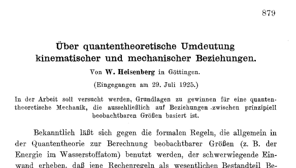
Nous allons rentrer dans le document afin d’introduire des themes nouveaux.
C’est semble t il une simple discussion avec Niels Bohr qui a convaincu Heisenberg de s’attaquer au problème de la détermination de la trajectoire de l’électron autour d’un atome. Ensuite Heisenberg a profité de son isolement sur l’île de Heligoland pour soigner une allergie aux pollens de fleurs pour y réfléchir.
2.2 Seconde loi de Newton en physique classique :
Formulée en 1687 dans ses Principia, la seconde loi de Newton révolutionne la physique en liant la force au changement de mouvement. Elle s’exprime par la célèbre relation \vec{F} = m\vec{a} qu’Heisenberg exprime sous forme simplifiée :
\ddot{x} + f(x) = 0
Si Heisenberg pose cette formule connu, ce n’est pas pour le plaisir de faire de la physique classique mais car il pense que l’on peut partir de cette formule et en trouver une extension quantique. Il cherche une algèbre. Ainsi il cherche à construire en théorie quantique un formalisme qui corresponde le plus étroitement possible à celui de la mécanique classique.
2.3 Définition de l’action pour Bohr :
Le concept d’action naît au XVIIIe siècle avec Maupertuis et Euler, qui postulent que la nature est “économe” et minimise toujours une quantité physique lors d’un mouvement.
Heisenberg s’intéresse à la notion d’action, prise comme l’impact et qui peut s’exprimer comme une énergie que multiplie une durée, ou comme une vitesse que multiplie une distance. h signifie ici le quantum d’action. Cela signifie qu’en quantique la constante de planck h introduit une nouvelle dimension à l’action.
\oint pdq=\oint m\dot{x}dx=J(=nh)
Toutefois ici il faut se placer dans la physique de époque et J représente l’action et elle est un multiple de n. Cela signifie que plus le niveau énergie est élevé plus l’action pour l’atteindre est importante. L’action peut être le produite de énergie par la durée ou du déplacement par la vitesse. Cette formulation de l’action va être profondément remise en cause par Heisenberg.
2.4 Introduction du paramètre position :
- tout d’abord, nous cherchons a exprimer la position x d’une particule. En supposant la fonction périodique nous allons la décomposer en série de fourier,
x=\Sigma_{+\infty}^{-\infty}a_{\alpha}(n)e^{i\alpha\omega_{n}t}
Attention ici il s’agit d’une expression en physique classique. Mais nous allons voir que Heisenberg va “abandonner” x car considere comme non observable. Toutefois nous restons encore dans le cadre la la mécanique classique. Un mouvement périodique peut être un oscillateur harmonique mais surtout la trajectoire d’un electron sur son orbite imaginée dans le modele de Bohr. On dirait que Heisenberg presuppose que le mouvement quantique est périodique. En realite il exige que si un mouvement quantique existe alors il permet un mouvement classique périodique. Dans le modèle de Bohr le mouvement classique était considéré comme un cas particulier du mouvement quantique (celui ou n est très grand). C’est pour cette raison (qu’on appelle principe de correspondance) que l’on peut prendre le mouvement périodique classique comme point de départ du raisonnement. Plus tard on se détachera de la vision continue de x(t) de la physique classique.
2.5 Mise en evidence de l’energie :
Il suffit de la dériver pour prendre l’expression de v.
m\dot{x}=\Sigma_{+\infty}^{-\infty}a_{\alpha}(n)i\alpha\omega_{n}e^{i\alpha\omega_{n}t}
En basculant de dq en dt on introduit un carre. L’énergie cinétique est une vitesse au carrée. Le carre introduit qu’il s’agit d’une énergie. On remarque que ici on raisonne toujours en physique classique. Toutefois on se positionne a raisonner en terme d’énergie, or une transition entre un état n et un état n+1 et bien quelque chose qui coûte une certaine énergie. On voit l’intuition d’Heisenberg. Le terme a_{\alpha}(n) \cdot a_{-\alpha}(n) préfigure \left|a_{\alpha}(n)\right|^2. Heisenberg s’intéresse beaucoup aux amplitudes et a leurs significations physiques.
\oint m\dot{x}dx=\oint m\dot{x}^2dt=2\pi m\Sigma_{+\infty}^{-\infty}a_{\alpha}(n)a_{-\alpha}(n)\alpha^2\omega_{n}
2.6 Limite classique dans la formulation de l’action :
On obtient ainsi le terme suivant :
\oint mx^2dt=2\pi \Sigma_{+\infty}^{-\infty} |a_{\alpha}(n)|^2\alpha^2\omega_{n}
Ici Heisenberg explique que cette formulation ne le satisfait pas. Il en préfère une autre :
\frac{d}{dn}(nh)=\frac{d}{dn}\oint m\dot{x}dt
Dans cette partie difficile, Heisenberg cherche à tout prix à exprimer l’action non pas comme liée a un niveau d’énergie n donné mais a la différence entre deux niveaux, d’où l’expression de la derivée \frac{d}{dn}
On construira plus tard une matrice dérivée (opérateur de dérivation) et nous verrons qu’elle permettra de mettre en valeurs des valeurs propres ou valeurs mesurables de la vitesse de la particule. Ainsi le formalisme est pose.
Pour n grand dn est tres petit et donc la derivve de nh par rapport a n vaut h d ou la formule suivante :
h=2\pi m \Sigma_{+\infty}^{-\infty} \alpha \frac{d}{dn} a\alpha \omega_{n} |a_{\alpha}|^2
On peut remarquer que jusqu’ici on est toujours dans la physique classique car la difference de niveaux est exprimee par dn.
2.7 Introduction de la quantification dans les indices :
Revenons a la formule classique de l’action : \oint p \, dq = nh.
p est une impulsion (p = m \dot{q}) et q une position. En remplacant x et v par leurs valeurs mais en ajoutant les indices on finit par obtenir la formule suivante :
h = 4\pi m \Sigma_{0}^{+\infty}\alpha{|a(n,n+\alpha)|^2\omega(n,n+\alpha)}-{|a(n,n-\alpha)|^2\omega(n,n-\alpha)}
Enfin ici Heisenberg a utilise la théorie de Kramer qui introduit des amplitudes de transition. On a réalisé le “saut”.
On voit qu’il y a des transitions dans le sens montants, d’autres dans le sens descendant mais la différence n’est pas nulle : elle est même constante, égale à h. On introduit l’algèbre non commutative (celle qui dit que p.x \neq p.x) dans la physique.
On remarque aussi qu’il n’y a dans la formule pas de mention de la position ni de la vitesse.
Cet article de Heisenberg de 1925 est très abstrait, en particulier le concept de position dont je rappelle les points ici, au risque de tomber dans l’interprétation :
le point de départ est la physique classique et la formulation de x(t) sous la forme d’une série de fourrier. Il s’agit de voir la quantique comme une extension de la physique classique (et pas l’inverse comme on le fait souvent).
on abandonne la possibilité de la position. Il s’agit quasiment d’un choix arbitraire.
en troisième lieu la position ressuscite sous forme de la matrice position X. Toutefois prendre un stylo et une feuille de papier, dessiner une matrice avec un X dedans ne suffit pas a faire une matrice position. Les composantes de la matrice expriment des transitions d’états (on remplace un espace des positions par un espace des transitions). C’est bien la position de X dans la relation de la non commutation (X.Y\neq Y.X) qui fait les propriétés de la matrice X.
On voit comment la spacialité éclate complètement au profit des composantes de la matrices qui expriment des potentialités.
2.8 L’oscillateur anharmonique :
Ce paragraphe est important car il prouve la validité de la méthode de Heisenberg. Elle a des similitudes avec la méthode utilisée jusqu’à présent. Tout d’abord Heisenberg par de la physique classique
Voici la définition :
x=\lambda a_{0}+a_{1}coswt +\lambda a_{2}cos2wt + \lambda^2a_{3}cos3wt + ...+ \lambda^{\tau-1}a_{r}cos\tau\omega t
on a les relations de récurrence :
\omega_0^2 (\lambda a_0) + \lambda \langle x^2 \rangle = 0
Ici encore Heisenberg s’intéresse aux amplitudes : on laisse tomber x et on exprimer l’amplitude en fonction de n et de la fréquence. Ces amplitudes constituent des transitions d’états.
Sans rentrer dans les details on tombe sur :
a^2(n,n-1)=\frac{(n+const)h}{\pi\omega_{0}}
et de fil en aiguille Heisenberg finie par aboutir à la formule de l’oscillateur :
W=(n+\frac{1}{2})hw_{0}/2\pi
Dans le document de 1925 la partie sur l’oscillateur harmonique est de loin la plus obscure à première lecture et pourtant le résultat est juste.
2.9 Conclusion :
On entend quelquefois que Heisenberg abouti aux résultats de la mécanique ondulatoire mais en “évitant l’onde”. De plus le document de 1925 présente une très grande cohérence d’approche dans sa méthode puisque qu’il applique pour l’oscillateur anharmonique exactement la même méthode qu’avant dans le document.
L’image ci-dessous présente les participants au congres de Solvay de 1927. En deux ans, la nouvelle physique était née.
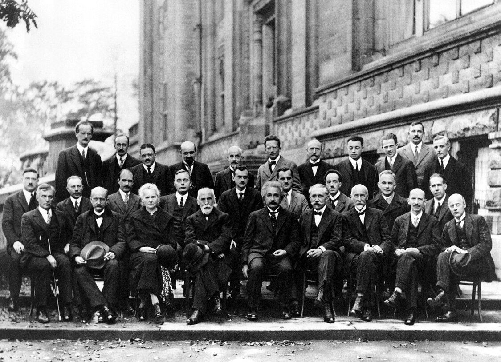
3 Faits experimentaux :
3.1 Le corps noir :
Le corps noir n’est pas forcément noir. C’est un concept théorique désignant un objet idéal qui absorbe tout le rayonnement électromagnétique qu’il reçoit. Dans la pratique, il est modélisé par une cavité avec une ouverture qui piège les rayons lumineux à l’intérieur. S’il ne reçoit aucun rayonnement extérieur, l’objet émet son propre rayonnement (chaleur ou lumière), uniquement en fonction de sa température. C’est cette émission d’énergie, dont la courbe spectrale n’est pas explicable par la physique classique, qui a conduit à la quantification de l’énergie.
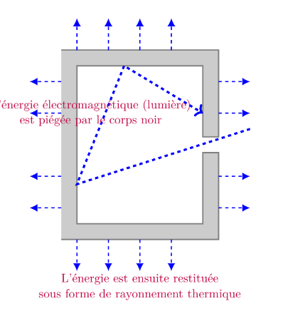
A un moment Planck eut l’idée d’introduire une constante h qui règle le problème qui vaut : h=6,626.10^{-34}J.s. Il imaginait que le corps noir se comportait comme un oscillateur harmonique de fréquence \mu mais dont les niveaux énergie sont quantifiés. Il s’agissait d’une astuce afin de faire coller les résultats avec l’expérience. Planck ne prévoyait pas un très grand avenir scientifique à la constante h qu’il avait introduite. C’est Einstein qui valorisa cette constante en proposant en 1905 une interprétation simple et efficace de l’effet photoélectrique en postulant que le rayonnement électromagnétique était lui même composé de quantas de lumière, appelés plus tard photons d’énergie \epsilon=h\mu. Ces quantas d’ énergie ne furent appelées photons qu’en 1926.
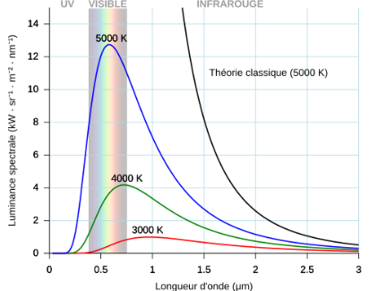
Max Planck (Planck 1901) écrit :
“si nous appliquons la loi de déplacement de Wien sous sa dernière forme à l’expression de l’entropie S, nous nous rendons compte que l’élément d’énergie \epsilon doit être proportionnel au nombre d’oscillations \mu et que donc : \epsilon=h\mu”
puis un peu plus loin Planck donne une première estimation pour h : h=6.55.10^{-27} erg.sec
A comparer avec la valeur réelle : 6,62607015 \times 10^{-34} J.s
h s’exprime en joules secondes : en physique il s’agit d’une action. Pour cette raison on appelle aussi h le quantum d’action.
3.2 L’effet photoélectrique :
Albert Einstein écrit : (Einstein 1905)
“Il me semble que les observations portant sur le”rayonnement noir” (…) apparaissent comme plus compréhensibles si on admet que l’energie de la lumière est distribuée de façon discontinue dans l’espace. Selon l’hypothèse envisagée ici, lors de la propagation d’un rayon lumineux émis par une source ponctuelle, l’énergie n’est pas distribuée de façon continue sur des espaces de plus en plus grands, mais est constituée d’un nombre fini de quantas d’énergie localises en des points de l’espace”.
Einstein pose dans cet article daté du 09 juin 1905 (soit environ 6 mois avant son célèbre article sur la relation masse énergie) la discontinuité de l’énergie non plus comme une constatation expérimentale mais comme un fondement théorique. Cet article lui vaudra le Prix Nobel de physique en 1921.
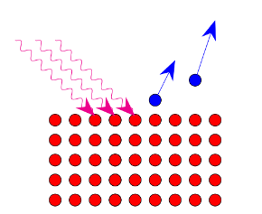
L’équation d’Einstein pour l’effet photoélectrique s’écrit :
\boxed{h\nu =W_{S}+{\frac {1}{2}}mv^{2}} où :
h\nu est l’énergie du photon ;
W_{S} est l’énergie de liaison de l’électron ;
\frac {1}{2}mv^{2} est l’énergie cinétique finale de l’électron. L’énergie d’un photon est caractérisée par la formule.
On considère que l’effet photoélectrique a fait apparaître l’aspect corpusculaire de la lumière (en plus de ondulatoire). (Greiner 2009)
3.3 Expérience des fentes d’Young :
3.3.1 Fentes d’Young avec la lumière :
En optique on admet que les trous S1 et S2 se comportent comme des sources secondaires qui, issues de la même source primaire S, mettent de sondes sphériques cohérentes entre elles. C’est le principe d’Huygens-Fresnel.
En tout point P du plan d’observation la fonction d’onde \Phi résulte de la superposition linéaire des fonctions d’onde \Phi 1 et \Phi 2.
\Phi=\Phi 1 +\Phi 2
3.3.2 Fentes d’Young avec des électrons :
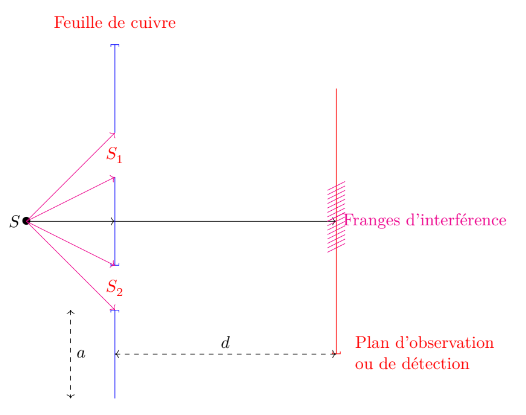
L’expérience pionnière de Faget et Fert a été reproduite avec deux fentes et plus par le physicien allemand Claus Joösson en 1961. En envoyant des électrons d’énergie cinétique E_{k}=50 keV sur une feuille de cuivre percée de deux fentes de largeur 0,5\mu m, distantes de 0,2\mu m, Jönsson observa sur une plaque photographique placée dans le plan d’observation P, des franges d’interférence des ondes électroniques(Perez, Carles, and Pujol 2013).
Dans l’expérience précédente la source primaire S émet des électrons que l’on détecte en P dans le plan P, après traversée des trous S1 et S2. En réduisant le flux d’électrons de telle sorte qu’entre S et P, à tout instant il n’y ait qu’un seul électron, on observe des points d’impact discrets dus aux électrons collectés pendant la durée d’exposition.
Si cette durée est faible, les points d’impact semblent se répartir de manière aléatoire. En revanche, si elle est suffisante, les impacts se répartissent peu à peu selon la figure d’interférence. Ceci est surprenant car à un électron unique on associe bien aussi une onde.
L’onde considérée en quantique est une onde de probabilité : elle diffère donc fondamentalement d’une onde physique habituelle, mécanique ou électromagnétique, puisque elle ne représente pas la variation d’une grandeur physique.
Nous reviendrons plus tard dans le cours sur l’approche statistique de la physique quantique.
4 Principe d’incertitude d’Heisenberg :
4.1 Expérience courante du principe d’incertitude
4.1.1 Que signifie l’incertitude en physique ?
Exemple 1 : Dans la vie courante, est-il possible de « faire l’expérience » du principe d’incertitude ? À Nice, sur la Promenade des Anglais, des chaises bleues bordent le front de mer. Dans le Vieux-Nice, les magasins de souvenirs vendent ces mêmes chaises en miniature. Si j’en achète une et que le vendeur l’emballe dans une boîte, quelle est l’incertitude sur la position de la chaise à l’intérieur de la boîte ?
Exemple 2 : Si je suis assis à la bibliothèque de la CIUP, je vois une table devant moi. Sa position est fixe. Toutefois, si je reviens demain, le bibliothécaire l’aura peut-être déplacée. Il y a pourtant peu de chances que la table se retrouve dehors, dans le parc. L’incertitude sur la position de la table est donc strictement bornée par la taille de la salle de lecture.
En conclusion : En physique, ce sont les conditions expérimentales et l’environnement (les conditions aux limites) qui fixent l’incertitude. Pour une particule élémentaire comme un électron, l’incertitude sur la position est directement liée à cette configuration (particule libre ou piégée dans un potentiel).
4.1.2 Première approche du principe d’incertitude
Intuitivement, quand un objet se déplace rapidement, sa trajectoire devient plus difficile à suivre du regard : sa position semble nous échapper, comme s’il fallait choisir entre observer sa vitesse ou fixer sa position.
Cependant, cette incertitude macroscopique est uniquement liée aux limites de nos sens ou de nos instruments de mesure. À l’échelle quantique, l’impossibilité de connaître simultanément et avec une précision infinie la position et la vitesse d’une particule n’est pas une simple contrainte expérimentale, mais une loi théorique fondamentale.
4.2 Principe d’incertitude des radioelectriciens :
En principe le terme de principe d’incertitude des radioelectriciens n’est pas l’objet d’un usage. Il est toutefois cité par Augustin Blaquiere (Blaquière 1960). Je choisis de le mettre en valeur dans ce cours car il a un intérêt pédagogique : en effet il fait le pont entre une notion classique et une notion quantique. Dans le cas classique nous sommes tous familiarisés avec le fait par exemple que le son de la voix peut être représentée par son spectre.
Le principe d’incertitude est une propriété mathématique des séries de fourier. Il n’est pas spécifique à la physique quantique. Ainsi on le retrouve en électronique lorsqu’on on associe à un signal temporel un spectre en fréquence. Toutefois il existe des différences entre les deux :
En électronique on raisonne systématiquement sur une amplitude (tension ou intensité) en fonction du temps, en physique quantique on parle le plus souvent d’une amplitude fonction de x.
Pour l’électronicien le principe d’incertitude prendra la forme \Delta t \times \Delta f \approx 1
Lorsque le signal est une impulsion brève dans le temps, la gamme de fréquence est très étendue mais les fréquences sont très serrées. Lorsque \Delta t tend vers 0 (impulsion breve) le spectre devient continu.
Avec le principe d’incertitude de radioelectriciens on ne prend pas en compte la condition de quantification présente dans la relation : E=h\mu
Il est intéressant de remarquer que dans un cas classique (électronique ou acoustique) si il est possible d’avoir une bande de fréquence très étirée (voir infinie) ce n’est pas en général la bande de fréquence “utile”. Par exemple :
En électronique on a l’habitude de fabriquer des filtres passe haut, passe bas ou passe bande afin d’éliminer les fréquences excentrées qui constituent du bruit.
En acoustique, le timbre d’une voix humaine est un mélange de différentes fréquences. Personne n’a une voix “monocorde”. Toutefois ici encore le message utile à la compréhension d’une voix humaine est regroupé sur une bande de fréquence limitée. On peut remarquer que en cas de bruit de fond, dans une salle très bruyante par exemple, à condition de se concentrer il est possible d’isoler la conversation qui nous intéresse comme si le cerveau avait une capacité de filtrage sélective. De même l’oreille réussit à isoler des sons isolés. Autre exemple : dans une salle de restaurant bruyante, si une cuillerée tombe par terre, on isole très bien cet “évènement” du bruit de fond constitué des autres sons.
4.3 Transposition au domaine électromagnétique :
Toutefois on peut se demander si un principe équivalent au principe d’incertitude des radioelectriciens existe dans le cas d’ondes électromagnétiques c’est à dire d’ondes lumineuses.
Nous savons qu’en quantique il y a une condition de quantification (E=h\nu). nous savons depuis l’expérience du corps noir que cette condition s’applique aux ondes lumineuses. Mais que se passe t il si on applique pas la condition de quantification et qu’on en reste a \nu et pas à E.
Bohr était un bon pédagogue et des 1928 il a pu communiquer une synthèse assez aboutie. Rappelez vous de la photo de la page 5 qui correspond au congre Solvay de 1927. Celui-ci a permis les discussions que l’on appelle quelquefois par abus de langage le “consensus de Copenhague”.
Ainsi Bohr (BOHR 1928) décrit cette forme première du principe d’incertitude avant quantification en prenant l’exemple d’une onde plane élémentaire ayant la forme : A\cos 2 \pi(\nu t -\sigma x -\sigma y -\sigma z + \delta) ou A et \delta sont des constantes désignant l’amplitude et la phase ; \mu est la fréquence ; \sigma x, \sigma y et \sigma z sont les nombres d’onde dans les directions des axes.
Alors selon Bohr, stricto sensu la représentation d’un champ d’ondes limite exige une multiplicité d’ondes élémentaires correspondant à toutes les valeurs possibles de \nu e de \sigma. Cependant dans les cas les plus favorables les valeurs moyennes des différentes grandeurs (…) seront données par la relation : \Delta t \Delta \nu = \Delta x \Delta \sigma x = \Delta y \Delta \sigma y = \Delta z \Delta \sigma z =1
4.4 La publication de 1925 d’Heisenberg : vers un nouveau formalisme :
Revenons un peu en arriere. En 1924 alors qu’il n’est age que de 24 ans et qu’il n’a pas encore sa thèse, Heisenberg écrit : (Heisenberg 1925)
“Dans cette situation, il paraît judicieux d’abandonner tout espoir d’observer des grandeurs jusqu’ici inobservables, comme la position et la période d’un électron, et d’admettre que l’accord partiel entre les règles quantiques et l’expérience est plus ou moins fortuit. Au lieu de cela, il semble plus raisonnable de tenter d’établir une mécanique de la théorie quantique analogue a la mécanique classique, mais dans laquelle seules apparaissent des relations entre des grandeurs observables.”
On voit dans l’extrait ci-dessus que l’objectif d’Heisenberg est de ne baser l’interprétation que sur des résultats observables. Ainsi il s’agit de “renoncer” à une interprétation au delà de ce que la mesure peut nous donner.
Ceci est la première publication d’Heisenberg. Elle pose un formalisme base sur des tableaux. Heisenberg parlera de matrices un peu plus tard. Il posera le principe d’incertitude qui porte son nom en 1927.
Ainsi Andre Coret (Coret 2001) écrit : “En s’appuyant sur l’expérience c’est à dire sur la nécessite de considérer l émission lumineuse comme issue d’un changement d’état de l´electron et non de son mouvement, Heisenberg se permet une opération qu’il qualifie lui-même d’arbitraire (willkur).”
4.5 Apport du formalisme hamiltonien :
Sir William Rowan Hamilton était un physicien irlandais du 19 eme siècle.
Dans le formalisme hamiltonien, on abandonne les représentations temporelles directes x(t) ou v(t) au profit de l’espace des phases (q, p).En traçant p en fonction de q (par exemple les ellipses d’un oscillateur harmonique), le temps t s’efface de l’axe des représentations : il devient un paramètre sous-jacent qui régit le parcours du système le long de sa courbe d’énergie.Ce changement de regard habitue progressivement l’esprit à lier indissociablement la position q et la quantité de mouvement p, préparant le terrain pour la mécanique quantique où p deviendra un opérateur différentiel agissant directement sur q
Comme le rappellent Fritz London et Edmond Bauer (1939) (London and Bauer 1939), cités par Leite Lopes et Escoubès (Leite Lopes and Escoubès 1994) :
L’évolution du système dans le temps est réglée en mécanique classique par une “fonction hamiltonienne” H(p,q) caractéristique du système en question. Cette fonction de coordonnées q1,q2,…,qf et des impulsions p1,p2,pf (..) permet d’écrire les fonctions hamiltoniennes du mouvement. C’est cette même fonction H(q,p) qui en mécanique quantique aussi donne la loi d’évolution du représentant de l’état du système : on forme l’opérateur H(q,\frac{h}{2\pi i\frac{\delta}{\delta q}}) en remplaçant p dans l’hamiltonien par l’opérateur de différentiation : \frac{h}{2\pi i\frac{\delta}{\delta q}}
Ce que montre cette citation : La transition vers le quantique ne rejette pas l’Hamiltonien classique H(q,p), elle transforme la variable p en un opérateur différentiel \frac{\partial}{\partial q}. C’est cette opération de dérivation spatiale qui détruit la commutativité entre position et impulsion, et qui donne naissance au principe d’incertitude.
4.6 Approche intuitive de la non-commutation des fonctions
Comme le souligne Austin Blaquière (Blaquière and Jean 1960), le concept de non-commutation peut être introduit par des opérations mathématiques simples appliquées à une fonction d’onde \Psi(x) (que nous noterons ici f(x)).
Considérons les deux opérateurs mathématiques suivants :
- L’opérateur de position : \hat{x} (multiplication par x).
- L’opérateur de dérivation : \hat{D} = \frac{d}{dx}.
Appliquons ces opérateurs à la fonction f(x) selon les deux ordres possibles pour évaluer leur différence (le commutateur).
4.6.0.1 Ordre 1 (\hat{D}\hat{x}) : Multiplier par x, puis dériver
\hat{D} \left[ x f(x) \right] = \frac{d}{dx} \left[ x f(x) \right]
En utilisant la règle de dérivation d’un produit (uv)' = u'v + uv' : \frac{d}{dx} \left[ x f(x) \right] = \left(\frac{dx}{dx}\right) f(x) + x \frac{df(x)}{dx} = f(x) + x \frac{df(x)}{dx}
4.6.0.2 Ordre 2 (\hat{x}\hat{D}) : Dériver, puis multiplier par x
\hat{x} \left[ \frac{d}{dx} f(x) \right] = x \frac{df(x)}{dx}
4.6.0.3 Le Commutateur [\hat{D}, \hat{x}]
Calculons la différence des deux opérations appliquées à f(x) : \left( \frac{d}{dx} x - x \frac{d}{dx} \right) f(x) = \left( f(x) + x \frac{df(x)}{dx} \right) - x \frac{df(x)}{dx} = f(x)
En isolant l’action de l’opérateur, nous obtenons la relation algébrique pure : \left[\frac{d}{dx}, x\right] = \frac{d}{dx} x - x \frac{d}{dx} = 1
4.6.0.4 Le passage à la mécanique quantique
Cette propriété algébrique acquiert un sens physique fondamental via le postulat de quantification, qui définit l’opérateur d’impulsion \hat{p}_x : \hat{p}_x = -i \hbar \frac{d}{dx} \implies \frac{d}{dx} = \frac{i}{\hbar} \hat{p}_x
En remplaçant \frac{d}{dx} dans notre relation de commutation mathématique : \left[ \frac{i}{\hbar} \hat{p}_x, x \right] = 1 \implies \frac{i}{\hbar} \left[ \hat{p}_x, x \right] = 1 \implies \left[ \hat{p}_x, x \right] = -i\hbar
Par antisymétrie du commutateur ([\hat{x}, \hat{p}] = -[\hat{p}, \hat{x}]), on obtient la relation de commutation fondamentale d’Heisenberg : [\hat{x}, \hat{p}_x] = \hat{x}\hat{p}_x - \hat{p}_x\hat{x} = i\hbar
4.7 Conclusion : formulation du principe d’incertitude d’Heisenberg (position-impulsion)
La relation d’incertitude fondamentale limite la précision avec laquelle on peut connaître simultanément la position et la quantité de mouvement d’une particule :
\boxed{\Delta x \cdot \Delta p \geq \frac{\hbar}{2}}
Avec :
- \Delta x : l’incertitude (écart-type statistique) sur la mesure de la position.
- \Delta p : l’incertitude (écart-type statistique) sur la mesure de l’impulsion (quantité de mouvement).
- \hbar : la constante de Planck réduite (notée \hbar = \frac{h}{2\pi} \approx 1{,}054 \times 10^{-34} \text{ J}\cdot\text{s}).
Portée fondamentale du principe :
Il est essentiel de bien saisir la portée théorique de cette inégalité : il ne s’agit pas d’une simple contrainte expérimentale liée aux imperfections de nos instruments de mesure.
Même avec des appareils théoriquement parfaits, cette limite subsiste. C’est un principe physique et ondulatoire intrinsèque : une particule n’a pas simultanément une position et une vitesse parfaitement définies. La précision sur l’une floute inévitablement l’autre.
4.8 Cas caractéristiques du principe d’incertitude position-impulsion
Le principe d’incertitude s’exprime sous forme d’une inégalité : \Delta x \cdot \Delta p \geq \frac{\hbar}{2}.
On appelle états d’incertitude minimale les paquets d’ondes (généralement de forme gaussienne) pour lesquels le produit des incertitudes atteint exactement le seuil théorique :
\Delta x \cdot \Delta p = \frac{\hbar}{2}
Pour illustrer l’impact de la forme de l’onde sur la précision (comme le présente le cours de physique de Berkeley, (Wichmann, Lallemand, and Ostrowsky 1974)), examinons trois configurations :
4.8.1 1. L’onde plane (Incertitude maximale sur la position)
Une particule dont l’impulsion (la fréquence) est parfaitement connue possède une onde purement sinusoïdale.
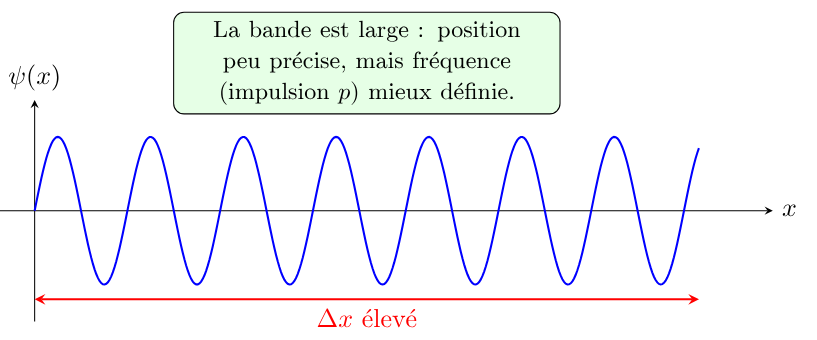
- Physique quantique : \Delta p est très faible (longueur d’onde \lambda unique), mais \Delta x tend vers l’infini. La particule peut se trouver n’importe où.
4.8.2 2. La superposition d’ondes (Battement)
En superposant deux fréquences distinctes, on observe un phénomène de battement.
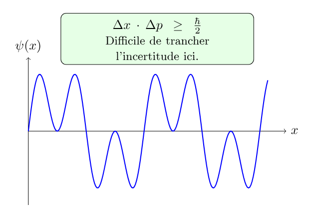
- Physique quantique : L’addition de fréquences commence à créer des zones de présence plus marquées, mais la position reste encore floue.
4.8.3 3. Le paquet d’ondes localisé (Confinement spatio-temporel)
En pratique, les particules se déplacent sous forme de paquets d’ondes (obtenus par la somme d’une infinité de fréquences via la transformée de Fourier).
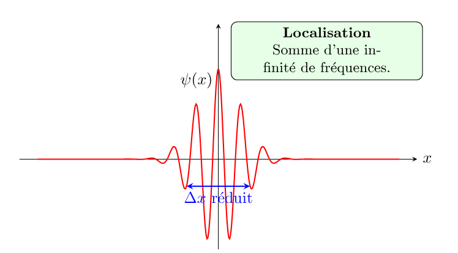
- Physique quantique : Le paquet est bien localisé dans l’espace (\Delta x est très réduit), mais cette localisation exige un large spectre de fréquences, ce qui augmente l’incertitude sur l’impulsion (\Delta p élevé).
4.8.4 Synthèse : Analogie avec le traitement du signal et les réseaux
| Configuration | État physique | Traduction “Signal / Réseau” |
|---|---|---|
| Onde plane (Figure 6) | Onde pure monochrome | Porteuse continue (CW) : fréquence parfaitement connue, mais impossible de dater un événement. |
| Battement (Figure 7) | Superposition modale | Signal multi-porteuse : début de structuration de l’information. |
| Paquet d’ondes (Figure 8) | Pulse localisé | Impulsion / Qubit transmis : résolution temporelle/spatiale précise, mais occupation spectrale large. |
4.9 Principe d’incertitude temps-énergie
On l’appelle parfois le second principe d’incertitude d’Heisenberg. Il ne s’agit pas d’une simple réécriture du premier principe (position-impulsion), mais d’une relation de nature différente.
4.9.1 1. Du principe des radioélectriciens au monde quantique
En traitement du signal et en acoustique, il existe une limite fondamentale appelée « principe d’incertitude des radioélectriciens » (ou limite de Gabor) qui lie la durée d’une impulsion \Delta t à sa largeur spectrale en fréquence \Delta f :
\Delta t \cdot \Delta f \approx 1
Appliquons à cette relation la condition de quantification de Planck-Einstein (E = h\nu, où \nu est la fréquence) :
f = \frac{E}{h}
En injectant cette relation dans l’inégalité spectrale :
\Delta t \cdot \Delta\left(\frac{E}{h}\right) \approx 1 \implies \Delta E \cdot \Delta t \approx h
En formalisant cette approche par la mécanique ondulatoire rigoureuse, on obtient la borne minimale exacte :
\boxed{\Delta E \cdot \Delta t \geq \frac{\hbar}{2}}
4.9.2 2. Interprétation et portée physique
Dans cette inégalité :
- \Delta E représente l’incertitude sur l’énergie du système (la largeur de l’état énergétique).
- \Delta t représente la durée de vie de cet état quantique (ou le temps nécessaire pour que le système évolue de manière significative).
Exemple physique : Plus la durée de vie d’un état excité est courte (\Delta t petit), plus la largeur en énergie de cet état est grande (\Delta E élevé), ce qui se traduit directement par un élargissement des raies spectrales en spectroscopie.
4.9.3 3. La rupture de la quantification
Ce second principe n’existerait pas sans le postulat de Planck reliant la fréquence à l’énergie. Il traduit un fait fondamental et peu intuitif : une fréquence élevée transporte une quantité d’énergie proportionnellement plus importante.
Dans un réseau de communication, cela signifie qu’une transition d’état extrêmement rapide exige une bande passante énergétique vaste.
5 L’onde de Louis de Broglie : la physique ondulatoire
5.1 Représentation temporelle et spatiale : de la fonction porte à la distribution de Dirac
Après avoir abordé le principe d’incertitude d’Heisenberg à travers le formalisme matriciel, nous nous intéressons désormais à la description ondulatoire. Paradoxalement, nous allons débuter par une contrainte expérimentale fondamentale.
Une onde quantique peut être représentée aussi bien dans la base des positions (la position x en abscisse, l’amplitude de la fonction d’onde en ordonnée) que dans la base des impulsions (la quantité de mouvement p en abscisse). Allons-nous choisir la représentation la plus simple sur le plan mathématique ?
En laboratoire, il est bien plus aisé de faire dériver ou impacter des particules sur un écran pour mesurer directement leur position x, plutôt que d’évaluer une vitesse ou une impulsion p qui exige au moins deux mesures spatiales distinctes dans le temps.
Ainsi, par pragmatisme expérimental, nous poserons comme point de départ que l’étude d’une onde quantique s’effectue prioritairement dans la base en x.
5.1.1 Du monde matriciel au continu spatial
Dans les annexes mathématiques de ce document, nous avons étudié des matrices construites sur une base discrète d’énergie ou d’impulsion, dont les harmoniques de Fourier constituent les éléments de base.
Dans le cas de la base en x, la situation devient continue : chaque point de l’espace constitue un vecteur de la base repérant une position précise. Ainsi, de manière idéale, l’espace continu des positions s’apparente à une somme infinie d’impulsions de Dirac \delta(x - x_0) réparties sur tout le domaine spatial.
5.1.2 Synthèse des acquis avant d’aborder de Broglie
Cette introduction permet d’établir clairement le cadre physique et conceptuel :
- Le principe d’incertitude est posé : la position et l’impulsion sont liées par la transformée de Fourier.
- L’onde plane théorique : une onde monochromatique possède une fréquence parfaitement définie (donc \Delta p = 0).
- L’indétermination spatiale : en vertu du principe d’incertitude, une onde de fréquence pure implique une ignorance totale quant à la position exacte de la particule (\Delta x \to \infty).
- La structure de la base en x : l’état spatial idéal est perçu comme une superposition continue d’impulsions de Dirac.
Dans la théorie des systèmes et du traitement du signal (telle que développée par Austin Blaquière (Blaquière and Jean 1960)), l’étude de l’état d’un système nécessite cette même rigueur dans le choix de la base de représentation (temporelle t ou spatiale x).
5.1.3 1. Filtrage temporel et impulsion de Dirac
Pour échantillonner un état à un instant précis t_0, on utilise un intervalle temporel très court. Physiquement, une impulsion très brève s’assimile au coup d’une timbale (un signal court mais d’amplitude importante).
Mathématiquement, lorsque cet intervalle tend vers zéro, on tend vers la distribution de Dirac \delta(t - t_0).
Rappel mathématique — La distribution de Dirac (Najib 2022) : La distribution \delta de Dirac est définie informellement comme la limite d’un créneau \delta^{\epsilon}(x-x_{0}) de largeur \epsilon et de hauteur \frac{1}{\epsilon} lorsque \epsilon \to 0 : \int_{-\infty}^{+\infty}\delta(x-x_{0}) \, dx = 1 \quad \text{avec} \quad \delta(x-x_0) = \begin{cases} +\infty & \text{en } x = x_0 \\ 0 & \text{ailleurs} \end{cases}
Bien que nous raisonnions ici sur le temps t, le même formalisme s’applique à la position x pour définir un état parfaitement localisé en un point de l’espace.
5.1.4 2. Utilité de la fonction porte et spectre en Sinus Cardinal
L’impulsion de Dirac est une vue théorique idéale (\Delta x = 0). En pratique, toute mesure ou confinement s’effectue sur une largeur finie \epsilon via une fonction porte (ou fonction créneau).
Lorsqu’on passe du domaine spatial (ou temporel) au domaine fréquentiel par Transformée de Fourier, la réponse spectrale d’une fonction porte n’est plus un point unique, mais une fonction Sinus Cardinal (\text{sinc}) :
\mathcal{F}\{\text{Porte}(x)\} \propto \frac{\sin(k)}{k} = \text{sinc}(k)
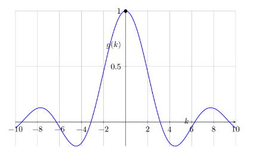
5.1.5 3. Remarques physiques fondamentales
Ici encore, ce sont les conditions expérimentales qui dictent le formalisme à retenir. L’utilisation de fentes et de diaphragmes en laboratoire rend naturelle l’utilisation de fonctions portes, qui constituent l’approximation pratique la plus directe de l’impulsion de Dirac.
La limite de l’onde plane : Si l’on souhaite représenter une onde plane idéale (dont l’incertitude sur la position est infinie, \Delta x \to \infty), la fonction porte permet d’écrire une onde extrêmement étalée dans l’espace. Par transformée de Fourier, cette porte très large se resserre dans l’espace des impulsions p pour tendre vers un pic (une impulsion de Dirac en p), traduisant une fréquence et une quantité de mouvement parfaitement définies (\Delta p \to 0).
Du Sinus Cardinal à la Gaussienne : Le sinus cardinal est la réponse spectrale naturelle d’une fonction porte aux bords tranchants. En pratique, lorsqu’une particule libre n’est pas tronquée artificiellement par une fente rigide, son profil spatial réel s’exprime sous la forme d’un paquet d’ondes gaussien.
La propriété remarquable de la Gaussienne : La transformée de Fourier d’une gaussienne étant elle-même une gaussienne, ce formalisme permet de décrire élégamment un paquet formé d’une superposition d’ondes de fréquences très proches. Ce concept sera essentiel pour introduire plus loin les notions de vitesse de phase et de vitesse de groupe.
Note épistémologique — L’élégance de Fourier vs le pragmatisme de la base en x :
La représentation fréquentielle (issue des séries de Fourier) offre une base d’états propre, orthonormée et mathématiquement idéale. À l’inverse, la base en position x peut sembler artificielle : elle associe à chaque point de l’espace un vecteur représenté par une distribution de Dirac \delta(x - x_0), un objet qui n’est pas une fonction usuelle. C’est pourtant le prix mathématique à payer pour décrire la localisation spatiale et l’acte de mesure expérimentale.
5.2 La thèse de Louis de Broglie (1924) : l’acte de naissance de la mécanique ondulatoire
Cette intuition d’un objet étalé dans l’espace auquel on associe une fréquence propre trouve son origine fondamentale dans la thèse de doctorat de Louis de Broglie (Broglie 1924). Il y écrit :
« L’électron est pour nous le type du morceau d’énergie isolé, celui que nous croyons, peut-être à tort, le mieux connaître ; or d’après les conceptions reçues, l’énergie de l’électron est répandue dans tout l’espace avec une très forte condensation dans une région de très petites dimensions dont les propriétés nous sont d’ailleurs fort mal connues. Ce qui caractérise l’électron comme atome d’énergie, ce n’est pas la petite place qu’il occupe dans l’espace, je répète qu’il l’occupe tout entier, c’est le fait qu’il est insécable, qu’il forme une unité. Ayant admis l’existence d’une fréquence liée au morceau d’énergie, cherchons comment cette fréquence se manifeste à l’observateur fixe dont il fut question plus haut. »
5.2.1 La relation de de Broglie
En postulant qu’à toute particule matérielle possédant une énergie est associée une fréquence interne \nu (puis une longueur d’onde \lambda), de Broglie réalise la synthèse fondamentale entre la vision corpusculaire et l’approche ondulatoire.
Il en déduit la relation fondamentale reliant la longueur d’onde de la matière à sa quantité de mouvement p :
\lambda = \frac{h}{p}
Où h est la constante de Planck.
Cette équation constitue la pierre angulaire de la mécanique ondulatoire : * Une particule dotée d’une impulsion p parfaitement définie (\Delta p = 0) correspond à une onde plane pure de longueur d’onde \lambda. * Comme nous l’avons vu précédemment, dans la base des positions x, cette onde s’étend sur tout l’espace (\Delta x \to \infty), illustrant parfaitement le fait que l’électron « occupe tout l’espace ».
5.3 Concept d’onde de matière
L’électron étant une particule massive, on nomme onde de matière (ou onde matérielle) l’onde associée à son déplacement.
5.3.1 Forme de la fonction d’onde complexe
Par analogie avec l’optique ondulatoire, cette onde plane monochromatique idéale s’exprime sous forme complexe :
\boxed{\Psi(\vec{r},t) = a \, e^{-i(\omega t - \vec{k} \cdot \vec{r})}}
Avec :
- a : l’amplitude de l’onde,
- \vec{k} : le vecteur d’onde (avec k = \|\vec{k}\| = \frac{2\pi}{\lambda}),
- \omega : la pulsation (\omega = 2\pi\nu, où \nu est la fréquence),
- \vec{p} = \hbar \vec{k} : le vecteur quantité de mouvement (impulsion).
En substituant les relations quantiques E = \hbar\omega et \vec{p} = \hbar\vec{k}, la fonction d’onde prend la forme fondamentale :
\Psi(\vec{r},t) = a \, e^{-\frac{i}{\hbar}(E t - \vec{p} \cdot \vec{r})}
5.3.2 La relation de de Broglie et la dualité
La relation de de Broglie relie directement la grandeur ondulatoire \lambda à la grandeur corpusculaire p :
\boxed{p = \frac{h}{\lambda}}
Cette formule — valable aussi bien pour les particules matérielles (électrons, neutrons) que pour les photons — constitue le pont formel de la dualité onde-corpuscule.
5.3.3 De l’onde plane au paquet d’ondes physique
Une difficulté majeure apparaît rapidement : la vitesse de phase v_{\phi} = \frac{\omega}{k} d’une onde plane pure ne correspond pas à la vitesse physique de la particule (v_{\text{particule}} \neq v_{\phi}).
Pour résoudre ce paradoxe, de Broglie envisage qu’une particule réelle ne peut pas être représentée par une onde sinusoïdale pure et infinie (qui impliquerait une localisation totalement inconnue, \Delta x \to \infty). Elle doit être décrite par une superposition d’ondes sinusoïdales de fréquences très proches : un paquet d’ondes.
Portée conceptuelle :
La relation \lambda = \frac{h}{p} n’est pas un simple postulat isolé. Elle a permis de comprendre qu’il existe un lien étroit entre la position physique de la particule et l’amplitude (l’enveloppe) du paquet d’ondes, ouvrant la voie à l’interprétation probabiliste de la mécanique quantique.
5.4 Vitesse de phase et vitesse de groupe
Dans toute cette analyse, nous continuons de considérer le cas d’une particule libre, c’est-à-dire affranchie de tout potentiel extérieur (V = 0).
On pourrait naïvement s’attendre à ce que la vitesse réelle de la particule corresponde à la vitesse de l’onde sinusoïdale pure de de Broglie. Cette vitesse ondulatoire individuelle est appelée vitesse de phase. En réalité, la vitesse de phase ne correspond pas à la vitesse de déplacement physique de la particule. C’est la vitesse de groupe de l’enveloppe du paquet d’ondes qui incarne la véritable vitesse de la particule.
5.4.1 Définitions mathématiques
- Vitesse de phase : v_{\phi} = \frac{\omega}{k}
- Vitesse de groupe : v_{g} = \left. \frac{d\omega}{dk} \right|_{k=k_{0}}
5.4.2 Conclusion fondamentale
La vitesse de groupe v_{g} est rigoureusement égale à la vitesse classique de la particule (v_{\text{classique}} = \frac{p}{m}).
En mécanique quantique, la vitesse physique observée d’une particule est la vitesse de groupe de son paquet d’ondes. Le paquet d’ondes gaussien constitue ainsi la contrepartie quantique naturelle d’une particule localisée en mouvement.
6 Équation de Schrödinger :
6.1 Rappels de physique des ondes
Avant d’aborder le formalisme de Schrödinger, il est utile de fixer quelques définitions terminologiques fondamentales :
- Onde progressive : Une onde qui se propage dans l’espace (comme le son dans l’air ou la lumière dans le vide). Elle transporte de l’énergie sans transport global de matière.
- Onde stationnaire : Une onde dont le profil ne se déplace pas mais oscille sur place. Elle résulte de l’interférence de deux ondes progressives identiques se déplaçant en sens inverses (par exemple, la corde d’une guitare pincée ou une onde électromagnétique piégée dans une cavité).
- Onde plane : Une modélisation idéale où le front d’onde est un plan infini orthogonal à la direction de propagation. L’onde ne dépend que d’une seule coordonnée spatiale. C’est une abstraction pratique, irréalisable au sens strict dans la nature.
- Équation de d’Alembert (1746) : L’équation différentielle fondamentale qui régit la propagation de toute onde classique en 3D (mécanique ou électromagnétique) :
\nabla^2 \vec{E} = \frac{\partial^2 \vec{E}}{\partial x^2} + \frac{\partial^2 \vec{E}}{\partial y^2} + \frac{\partial^2 \vec{E}}{\partial z^2} = \frac{1}{c^2} \frac{\partial^2 \vec{E}}{\partial t^2}
On remarque que contrairement à l’équation de d’Alembert qui est du second ordre en temps, la future équation de Schrödinger sera du premier ordre en temps, marquant une rupture majeure avec la physique classique.
6.1.1 Le saut conceptuel : de l’onde progressive à l’onde stationnaire
En 1926, lorsqu’Erwin Schrödinger dérive son équation différentielle, il reconnaît explicitement sa dette envers de Broglie tout en soulignant sa propre contribution majeure :
« Je ne saurais passer sous silence que je dois l’impulsion première qui a fait éclore ce travail pour la plus grande part à la remarquable thèse de Louis de Broglie. (…) La principale différence entre ses résultats et les nôtres consiste en ce que M. de Broglie imagine des ondes progressives, tandis que si on interprète nos formules au moyen d’une hypothèse ondulatoire, on est conduit à des vibrations d’ondes stationnaires. »
— Erwin Schrödinger (1926)
Cette remarque éclaire parfaitement notre démarche : * L’approche de de Broglie décrit une onde de matière progressive associant impulsion et propagation (\lambda = h/p). * L’approche de Schrödinger applique des conditions aux limites à cette onde. Le confinement transforme l’onde progressive en onde stationnaire, faisant émerger naturellement la quantification de l’énergie.
6.1.2 4. La physique réelle : le règne des approximations
En mécanique quantique théorique, nous manipulons trois idéalisations mathématiques strictes :
- L’onde plane (qui exigerait une extension spatiale et une énergie infinies),
- L’équation de Schrödinger (qui exigerait un système parfaitement isolé de l’Univers),
- L’état pur (qui exigerait l’absence totale d’interaction ou de bruit thermique).
En pratique, l’expérimentateur ne manipule jamais ces objets idéaux : il travaille avec des paquets d’ondes gaussiens, des systèmes ouverts et des états mixtes régis par la décohérence. Les concepts d’ondes planes ou d’états purs ne sont que des asymptotes d’étude indispensables pour construire les bases du calcul.
6.2 Exemple tiré de l’électronique : de la représentation d’état à la physique quantique
Pour comprendre le formalisme quantique, on peut établir une analogie directe avec le traitement du signal et la théorie des systèmes.
Considérons un circuit RLC série (un filtre passe-bande classique) composé d’une résistance R, d’une inductance L et d’une capacité C.
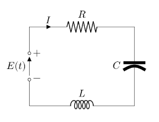
La tension d’entrée e(t) et le courant i(t) sont des grandeurs électriques dépendant du temps. La loi des mailles et la relation de charge du condensateur régissent le système :
\left\{ \begin{array}{ll} L\dfrac{di(t)}{dt} = -R\,i(t) - v_c(t) + e(t) \\[6pt] i(t) = C\dfrac{dv_c(t)}{dt} \end{array} \right.
6.2.1 Le passage à la représentation d’état
En électronique moderne et en automatique, au lieu de manipuler cette équation sous forme fonctionnelle scalaire, on introduit la notion d’état. On regroupe les variables du système dans un vecteur d’état X(t) :
\frac{dX(t)}{dt} = \begin{bmatrix} -R/L & -1/L \\ 1/C & 0 \end{bmatrix} X(t) + \begin{bmatrix} 1/L \\ 0 \end{bmatrix} e(t) \quad \text{avec} \quad X(t) = \begin{bmatrix} i(t) \\ v_c(t) \end{bmatrix} (Dixneuf and Bellouvet 2007)
6.2.2 Le parallèle direct avec l’équation de Schrödinger
Cette approche matricielle des systèmes dynamiques classiques est l’exact pendant du formalisme de la mécanique quantique :
| Électronique / Automatique (RLC) | Physique quantique |
|---|---|
| Vecteur d’état X(t) (courant, tension) | Fonction / Vector d’état \Psi(x,t) |
| Matrice de dynamique A (composants R, L, C) | Opérateur Hamiltonien \hat{H} (énergie T + V) |
| Équation d’état \frac{dX}{dt} = AX + Bu | Équation de Schrödinger i\hbar \frac{\partial \Psi}{\partial t} = \hat{H}\Psi |
En mécanique quantique, l’état d’une particule évolue ainsi sous l’action d’un opérateur (\hat{H}), de la même façon que l’état d’un circuit électrique évolue sous l’action de la matrice des propriétés physiques de ses composants.
6.3 Les multiples voies d’accès à l’équation de Schrödinger
L’équation de Schrödinger est un postulat. Elle ne se « démontre » pas, mais elle s’introduit selon plusieurs perspectives :
- L’approche hamiltonienne (Austin Blaquière) : On part de la conservation classique de l’énergie E = \frac{p^2}{2m} + V et l’on substitue les grandeurs dynamiques par leurs opérateurs (E \to i\hbar \partial_t et p \to -i\hbar \partial_x).
- L’approche ondulatoire (Schrödinger) : On adapte l’équation des ondes de d’Alembert en y injectant la relation de de Broglie \lambda = h/p.
- L’analogie thermodynamique : Pour une particule libre, l’équation de Schrödinger s’apparente à une équation de la chaleur à coefficient de diffusion réel D = \frac{\hbar}{2m}, mais appliquée à un temps imaginaire (t \to i\tau). Ce saut dans le domaine complexe transforme la diffusion irréversible en une propagation ondulatoire réversible.
- L’approche newtonienne (Potentiel quantique) : En écrivant \Psi = R \, e^{iS/\hbar}, on retrouve l’équation de Newton m\vec{a} = -\vec{\nabla}(V + Q), où Q est un « potentiel quantique » d’origine purement ondulatoire.
6.4 Équation de Schrödinger à partir de l’équation de la chaleur
Plutôt que d’utiliser le traditionnel principe de correspondance, il est particulièrement instructif de partir de l’équation de la chaleur. Cette approche met en lumière les affinités profondes entre la mécanique quantique et la thermodynamique.
Posons l’équation de la chaleur classique à une dimension :
\frac{\partial u(x,t)}{\partial t} = D \frac{\partial^2 u(x,t)}{\partial x^2}
où D > 0 représente le coefficient de diffusion.
Contrairement à l’équation des ondes de d’Alembert (qui comporte une dérivée seconde en temps \frac{\partial^2}{\partial t^2}), l’équation de la chaleur présente une dérivée première en temps, tout comme l’équation de Schrödinger.
En appliquant la rotation de Wick, nous faisons passer le temps du domaine réel au domaine imaginaire (t \to i\tau) :
\frac{\partial u(x,\tau)}{\partial (i\tau)} = D \frac{\partial^2 u(x,\tau)}{\partial x^2} \implies -i \frac{\partial u(x,\tau)}{\partial \tau} = D \frac{\partial^2 u(x,\tau)}{\partial x^2}
En multipliant l’ensemble par -i\hbar, l’équation devient :
i\hbar \frac{\partial u(x,\tau)}{\partial \tau} = -\hbar D \frac{\partial^2 u(x,\tau)}{\partial x^2}
6.4.1 Interprétation physique : du dissipatif au réversible
En identifiant cette forme avec l’équation de Schrödinger pour une particule libre :
\boxed{i\hbar \frac{\partial \Psi(x,t)}{\partial t} = -\frac{\hbar^2}{2m} \frac{\partial^2 \Psi(x,t)}{\partial x^2}}
nous constatons qu’il suffit de fixer le coefficient de diffusion quantique à :
D = \frac{\hbar}{2m}
Portée conceptuelle :
Fixer une valeur exacte au coefficient de diffusion revient à forcer le phénomène à basculer d’un processus irréversible amorti (la diffusion thermique) vers un processus réversible sans perte d’énergie (la propagation de la fonction d’onde). L’unité imaginaire i transforme l’étalement irréversible de la chaleur en une oscillation de phase qui conserve la probabilité.
Comme le rappelle J.-P. Ansermet dans son traité de thermodynamique (Ansermet and Bréchet 2016), l’équation de la chaleur s’impose comme un modèle phénoménologique dont le coefficient de transport (\lambda ou D) peut a priori adopter toute valeur adaptée au système étudié.
En physique quantique, le choix D = \frac{\hbar}{2m} n’est donc pas une hypothèse arbitraire, mais l’injection des constantes fondamentales du système (la constante de Planck réduite \hbar et la masse m de la particule) dans une structure de bilan de flux.
6.5 L’équation de Schrödinger dans son cadre général
Plutôt que de chercher à résoudre cette équation sur des cas d’école idéalisés (puits de potentiel infini, oscillateur harmonique), ce qui relève de la simple technique mathématique, il importe d’en saisir la structure formelle et la portée conceptuelle.
L’état d’un système quantique est représenté par un vecteur d’état |\Psi(t)\rangle dans un espace de Hilbert. Son évolution temporelle est régie par l’équation de Schrödinger dépendant du temps :
\boxed{i\hbar \frac{\mathrm{d}}{\mathrm{d}t}|\Psi(t)\rangle = \hat{H} |\Psi(t)\rangle}
où \hat{H} est l’opérateur Hamiltonien, générateur des translations temporelles et observable associée à l’énergie totale du système.
6.5.1 Propriétés fondamentales de la dynamique :
- Linearité : Si |\Psi_1\rangle et |\Psi_2\rangle sont des solutions, toute superposition linéaire \alpha|\Psi_1\rangle + \beta|\Psi_2\rangle est également une solution. C’est le principe de superposition d’états.
- Unitarité et conservation : L’opérateur d’évolution U(t, t_0) = \exp\left(-\frac{i}{\hbar}\hat{H}(t - t_0)\right) est hermitien/unitaire. Il garantit la conservation stricte de la norme du vecteur d’état dans le temps (\langle \Psi(t)|\Psi(t)\rangle = 1), signifiant que la probabilité totale de présence reste constamment égale à 1.
- Déterminisme de l’amplitude : Bien que la mesure quantique soit probabiliste, l’évolution temporelle du vecteur d’état |\Psi(t)\rangle avant la mesure est rigoureusement déterministe.
6.5.2 Pourquoi la résolution exacte s’arrête ici
L’équation sous cette forme suppose un système totalement isolé décrivant un état pur parfait.
Dans un contexte applicatif réel (canaux de transmission, processeurs quantiques, capteurs ou réseaux), un système n’est jamais isolé : il interagit en permanence avec son environnement (bruit, déphasage, dissipation). Poursuivre sur la résolution analytique d’états purs isolés est une modélisation incomplète.
Pour décrire la réalité expérimentale et la perte d’information, il est nécessaire de passer du vecteur d’état |\Psi\rangle à l’opérateur densité \hat{\rho}.
7 L’état de superposition
Cette approche s’inscrit dans les modèles récents d’application de l’information quantique aux systèmes distribués (Caporali 2026).
7.0.1 Peut-on parler du destin géométrique d’un point ?
Structure d’une matrice 2 \times 2 :
Prenons deux points P_1(x_1, y_1) et P_2(x_2, y_2). Nous allons considérer l’application linéaire suivante :
\begin{cases} x_2 = a x_1 + b y_1 \\ y_2 = c x_1 + d y_1 \end{cases}
Cela se représente par une matrice carrée :
\begin{pmatrix} a & b \\ c & d \end{pmatrix}
L’information présente dans la matrice décrit l’état de P_1 dans son cheminement géométrique vers P_2. Les coefficients a et d sont les éléments diagonaux, tandis que b et c sont les éléments non diagonaux.
Voici quelques configurations fondamentales :
- Matrice de rotation (\pi/2) : \begin{pmatrix} 0 & -1 \\ 1 & 0 \end{pmatrix}
- Matrice de symétrie : \begin{pmatrix} 0 & 1 \\ 1 & 0 \end{pmatrix}
- Matrice de projection : \begin{pmatrix} 1 & 0 \\ 0 & 0 \end{pmatrix}
- Matrice dégénérée : \begin{pmatrix} 1 & 1 \\ 1 & 1 \end{pmatrix}
Ce sont les éléments non diagonaux qui dictent la géométrie de la transformation (par exemple, la rotation d’un angle \pi/2). Les éléments diagonaux, quant à eux, correspondent géométriquement à des homothéties.
7.0.2 Loi dans le plan géométrique
Comme le rappelle Austin Blaquière dans son traité de mécanique (Blaquiere1966_t1?) :
Étant donné un point P_1 du plan, on lui fait correspondre un point P_2 par une loi donnée.
Une application linéaire possède une interprétation géométrique immédiate : il est tentant de remplacer un algorithme par le destin géométrique d’un point, comme si l’espace illustrait directement les mécanismes mathématiques sous-jacents.
L’utilisation du produit extérieur |v_1\rangle \langle v_2| permet de modéliser la corrélation entre deux entités du réseau. La matrice résultante :
|v_1\rangle \langle v_2| = \begin{pmatrix} X_1 X_2 & X_1 Y_2 \\ Y_1 X_2 & Y_1 Y_2 \end{pmatrix}
montre que chaque cellule est une hybridation des deux points. On a ainsi créé un opérateur.
Bien que mathématiquement cohérent, ce niveau d’abstraction nécessite d’être complété par un outil interprétable physiquement, afin de traduire les états du consensus en grandeurs observables. Austin Blaquière souligne cette nécessité fondamentale dans le second tome de son ouvrage (Blaquiere1966_t2?) :
Il faut remarquer que pour toute onde classique — onde acoustique, onde lumineuse… — nos sens sont impressionnés par le carré de l’amplitude a^2 et non pas par l’amplitude elle-même. Ceci résulte du fait que nos organismes ne peuvent percevoir que des énergies. Or l’énergie transportée par une onde classique dans un temps donné, ou sa puissance, est proportionnelle au carré de son amplitude.
On chercherait ainsi une matrice plus directement interprétable, de la forme :
\begin{pmatrix} X_1^2 & b \\ c & X_2^2 \end{pmatrix}
où X_1^2 et X_2^2 représentent les intensités physiques issues de P_1 et P_2.
Cependant, le produit simple |v_1\rangle \langle v_2| ne peut jamais fournir une structure du type \begin{pmatrix} X_1^2 & a \\ a^* & X_2^2 \end{pmatrix}. Nous nous heurtons ici à une impasse conceptuelle.
7.0.3 Le saut dans le vide
Une démarche similaire à la rupture épistémologique initiée par Heisenberg (1925) (heisenberg1925?) devient alors nécessaire : abandonner les représentations cinématiques classiques au profit d’observables matricielles.
Pour exprimer la position x d’une particule à un instant donné, Heisenberg renonce à une valeur unique et choisit de manipuler un tableau — l’ancêtre de la matrice position \hat{X} — réunissant l’ensemble des positions possibles.
La clé consiste à raisonner non plus en coordonnées spatiales définies, mais en potentialités de coordonnées. Ce n’est plus une position x_1 OU une position x_2, mais une potentialité de position x_1 ET une potentialité de position x_2.
7.0.4 Le qubit et la superposition d’états
Le saut conceptuel du bit (information classique) au qubit (information quantique) traduit cette bascule. La superposition d’états — le fait d’habiter simultanément plusieurs états — s’interprète en posant une superposition de P_1 et P_2.
On définit le vecteur d’état :
|v_{\text{mixte}}\rangle = \alpha |v_1\rangle + \beta |v_2\rangle
Cette écriture s’interprète géométriquement comme une combinaison linéaire dans un espace de Hilbert. Son lien avec la mesure physique impose le passage au carré du module : |\alpha|^2 et |\beta|^2 représentent les probabilités de trouver le système respectivement dans l’état 1 ou 2.
Les coefficients \alpha et \beta sont les amplitudes de probabilité. Exprimés sous forme complexe (cartésienne \alpha = a + ib ou polaire \alpha = r e^{i\phi}), le module r fixe le niveau de présence (P = r^2), tandis que la phase \phi englobe l’information de structure et de cohérence.
8 L’opérateur densité \hat{\rho}
On a souvent l’impression que la matrice densité est un outil récent en physique quantique. Pourtant, dans leur ouvrage fondateur, Fritz London et Edmond Bauer (1939) (London and Bauer 1939), cités par Leite Lopes et Escoubès (Leite Lopes and Escoubès 1994), introduisent déjà l’« opérateur statistique » et la « matrice statistique », que l’on nomme aujourd’hui matrice densité.
En lisant ce texte rédigé en 1939, on est frappé par le chemin parcouru depuis les travaux pionniers des années 1925-1930. En appliquant le formalisme aux ensembles statistiques, London et Bauer écrivent :
Appelons la matrice statistique d’un cas pur une « matrice élémentaire ». La matrice d’un mélange général P peut alors être considérée comme une superposition linéaire de matrices élémentaires : P = \sum_n p_n P^{(n)}
8.0.1 Rappel : le produit externe (outer product)
Celui-ci est à ne pas confondre avec le produit extérieur (au sens de l’algèbre extérieure) ni avec le produit tensoriel.
Si l’on pose :
C = \begin{pmatrix} a \\ b \end{pmatrix} \quad \text{et} \quad L = \begin{pmatrix} c & d \end{pmatrix}
Le produit M = C \times L s’obtient en multipliant chaque élément de la colonne par chaque élément de la ligne :
M = \begin{pmatrix} a \times c & a \times d \\ b \times c & b \times d \end{pmatrix}
Contrairement au produit scalaire (matrice ligne multipliée par une matrice colonne), on réalise l’opération inverse : une matrice colonne multipliée par une matrice ligne. C’est le produit externe. Au lieu de donner un scalaire, le résultat fournit une matrice carrée d’opérateur.
8.0.2 Utilisation de la notation bra-ket \langle \cdot | \cdot \rangle
Dans le formalisme de Dirac :
- | v \rangle = \begin{pmatrix} x \\ y \end{pmatrix} représente un vecteur colonne (ket).
- \langle v' | = \begin{pmatrix} x'^* & y'^* \end{pmatrix} représente un vecteur ligne (bra), obtenu par transproposition conjuguée.
Le produit scalaire de deux vecteurs d’état s’écrit :
\langle v_1 | v_2 \rangle = X_1^* X_2 + Y_1^* Y_2 \in \mathbb{C}
Le produit externe d’un vecteur |v_1\rangle par un vecteur |v_2\rangle s’écrit |v_1 \rangle \langle v_2 |.
| Opération | Notation | Type de résultat | Analogie |
|---|---|---|---|
| PRODUIT SCALAIRE | \langle v_1 \mid v_2 \rangle | Scalaire (\mathbb{C}) | Ligne \times Colonne |
| PRODUIT TENSORIEL | |v_1\rangle \otimes |v_2\rangle | Vecteur d’espace étendu | Expansion d’espace |
| PRODUIT EXTERNE | |v_1\rangle\langle v_2| | Opérateur (Matrice) | Colonne \times Ligne |
8.0.3 La matrice densité : formulation
Si un système est dans l’état |\psi\rangle = \begin{pmatrix} X_1 \\ Y_1 \end{pmatrix}, la matrice densité \rho est définie par le produit externe de l’état avec lui-même :
\rho = |\psi\rangle \langle \psi| = \begin{pmatrix} X_1 \\ Y_1 \end{pmatrix} \begin{pmatrix} X_1^* & Y_1^* \end{pmatrix} = \begin{pmatrix} |X_1|^2 & X_1 Y_1^* \\ Y_1 X_1^* & |Y_1|^2 \end{pmatrix}
Cette matrice décrit les probabilités d’états : le dégradé des états possibles s’étend de l’état pur aux états mixtes. On retrouve bien sur la diagonale les intensités physiques |X_1|^2 et |Y_1|^2 (qui résolvent l’impasse conceptuelle soulevée précédemment), tandis que les termes hors-diagonaux X_1 Y_1^* codent les cohérences quantiques.
(Note : Dans le cas particulier d’un système intriqué, le sous-système peut se retrouver dans un état mixte alors que le système global reste dans un état pur).
Pour une introduction progressive à ces principes, on pourra consulter l’ouvrage de Michel Le Bellac (le_bellac_2005?), ainsi que les manuels de référence de Benenti et al. (Benenti2004?; Benenti2007?) pour les applications à l’information quantique.
8.1 Du vecteur d’état à l’opérateur densité
Cette formulation répond exactement à l’impasse conceptuelle rencontrée précédemment : le simple vecteur d’état |\Psi\rangle ne sait décrire qu’un état pur (une superposition cohérente quantique). Dès qu’un système interagit avec son environnement ou que l’observateur subit une ignorance statistique classique, il faut passer à l’opérateur densité \hat{\rho}.
8.1.1 1. Définition de la matrice densite
État pur (Cohérence quantique) : Le système est parfaitement isolé et décrit par un unique ket |\Psi\rangle. Son opérateur densité est le projecteur direct : \hat{\rho} = |\Psi\rangle\langle\Psi|
Mélange statistique (Incertitude classique) : Le système a une probabilité classique p_k d’être dans l’état pur |\Psi_k\rangle (avec \sum_k p_k = 1). Son opérateur densité s’écrit alors selon la formule de London et Bauer : \hat{\rho} = \sum_k p_k |\Psi_k\rangle\langle\Psi_k|
8.1.2 2. Propriétés fondamentales de l’opérateur densité
Tout opérateur densité \hat{\rho} vérifie trois propriétés mathématiques strictes :
- Hermiticité : \hat{\rho}^\dagger = \hat{\rho} (ses valeurs propres sont réelles).
- Conservation de la probabilité (Trace égale à 1) : \mathrm{Tr}(\hat{\rho}) = 1
- Positivité : Pour tout ket |\phi\rangle, \langle\phi|\hat{\rho}|\phi\rangle \ge 0 (les probabilités de présence sont toujours positives).
8.1.3 3. Critère de pureté et entropie de von Neumann
Pour savoir si un système est dans un état pur ou un mélange statistique, on utilise deux indicateurs majeurs :
- La pureté \gamma = \mathrm{Tr}(\hat{\rho}^2) :
- Pour un état pur : \mathrm{Tr}(\hat{\rho}^2) = 1
- Pour un mélange statistique : \mathrm{Tr}(\hat{\rho}^2) < 1
- L’entropie de von Neumann S : Elle généralise l’entropie de Gibbs-Boltzmann au cas quantique : S = -k_\mathrm{B} \, \mathrm{Tr}(\hat{\rho} \ln \hat{\rho}) L’entropie est strictement nulle (S = 0) pour un état pur (information maximale) et maximale pour un mélange complètement désordonné (ignorance maximale).
Cette irruption de l’entropie peut sembler abrupte. Pourtant, il ne s’agit pas d’une notion récente : dès 1939, London et Bauer (London and Bauer 1939) exposent clairement cette connexion fondatrice :
L’opérateur P caractérise un ensemble de systèmes identiques qui sont distribués d’une manière quelconque sur des états différents. Il joue un rôle analogue à celui de la fonction de répartition en mécanique statistique ordinaire. Il doit donc y avoir une connexion entre l’opérateur P et les grandeurs macroscopiques de la thermodynamique. […] Tout est contenu dans la définition de l’entropie S : S = -k N \, \mathrm{Trace}(P \ln P)
Ce saut conceptuel montre que l’opérateur densité n’est pas seulement un outil de calcul pour la mesure, mais la véritable passerelle entre la mécanique quantique et la physique statistique.
8.1.4 Importance de la matrice densité et de l’analogie avec le qubit pour les réseaux distribués
Un qubit n’est pas intriqué avec lui-même : il ne peut être intriqué qu’avec un autre qubit. En revanche, un qubit individuel peut se trouver dans un état de superposition, ce qui signifie qu’il habite simultanément l’état |0\rangle et l’état |1\rangle.
Nous ne dirons pas que le qubit est « en consensus avec lui-même », mais plutôt qu’il est en superposition : il vaut 0 et 1 en même temps.
Si, dans le domaine des réseaux distribués, nous considérons un nœud du réseau comme une entité élémentaire, nous pouvons modéliser ce nœud par analogie avec un qubit.
Prenons l’exemple d’un nœud du réseau Bitcoin qui participe au minage : * Il cherche à résoudre le puzzle cryptographique. S’il est le premier à réussir, il devient le nœud gagnant et son état vaut 1. * S’il échoue, son état vaut 0. * Pendant la phase de recherche (environ 10 minutes), son état ne réside ni exclusivement en 0 ni en 1 : il se trouve dans une superposition des deux potentialités.
Au bout de 10 minutes, la mesure (la découverte du bloc) réduit l’état à 0 ou 1. Mais pendant cet intervalle, l’état s’étire entre ces deux possibles.
C’est le concept de temps étiré (Proof of Stretching Time - PoST) proposé dans l’étude sur le consensus (Caporali 2026) :
9 Mesure quantique :
9.1 Mesure quantique : interaction et irréversibilité :
Dans certaines sciences, comme l’électronique, effectuer une mesure d’un système influe sur ce dernier. Il est possible de dire que : « j’observe donc je perturbe. ». En effet, lorsque l’on effectue une mesure sur un circuit électronique, il faut prendre en compte le fait que l’appareil de mesure est également un élément du circuit. Il peut disposer de sa propre résistance par exemple. Ainsi, effectuer une mesure revient à interagir avec le système (Cluzel, Mazel, and Hill 2020).
Ce principe de perturbation est amplifié en mécanique quantique. L’acte de mesure est l’interaction la plus violente que l’on puisse appliquer à un système quantique, car elle entraîne la perte irréversible de l’information sur l’état de superposition initial (via la réduction du paquet d’ondes). Cette notion d’irréversibilité est parfois mise en parallèle avec des concepts comme celui de la , où un état est validé et ne peut pas être annulé.
Niels Bohr (BOHR 1928) écrit à propos de la nature des transitions atomiques :
Des lignes spectrales qui selon la théorie classique devraient provenir d’un même état de l’atome sont attribuées, d’après le postulat quantique, à différents processus de transition entre lesquels l’atome a le choix.
En d’autres termes, là où la théorie classique permet une somme continue de possibilités (comme la décomposition continue d’une voix en fréquences), la théorie quantique force l’état à choisir un niveau parmi un ensemble discret et possible.
Les postulats de la mesure (Règles de Born) :
Les trois “règles” ou postulats fondamentaux de la mesure, formalisées par Max Born en 1926 dans son article Zur Quantenmechanik der Stoßvorgänge, sont essentiels pour relier le formalisme mathématique à l’expérience physique.
Selon (Wiggins 2024) page 67, ces règles sont :
9.1.1 Description de l’état et de l’observable
L’état d’un système physique est décrit par un ket normalisé |\Psi \rangle dans un espace de Hilbert \mathcal{H}.
Chaque grandeur physique mesurable (observable) d’un système est décrite par un opérateur auto-adjoint \hat{A} agissant sur l’espace de Hilbert \mathcal{H}.
9.1.2 Résultat de la mesure (postulat sur les valeurs)
Le seul résultat possible de la mesure d’une observable physique \hat{A} est une valeur propre de \hat{A}, notée \lambda.
9.1.3 Probabilité d’un résultat (Règle de Born)
Supposons le système dans l’état |\Psi \rangle. La probabilité que la mesure d’une observable \hat{A} donne la valeur propre \lambda s’écrit :
\boxed{\mathrm{Prob}_{\Psi}(\lambda) \equiv \langle\Psi|\hat{P}_{\lambda}|\Psi\rangle = \|\hat{P}_{\lambda}|\Psi\rangle\|^2}
où \hat{P}_{\lambda} est l’opérateur de projection orthogonal sur le sous-espace propre associé à \lambda.
Remarque intuitive : Dans le cas simple où la valeur propre est associée à un unique état propre |u_\lambda\rangle, le projecteur vaut \hat{P}_\lambda = |u_\lambda\rangle\langle u_\lambda|. La formule redonne exactement la règle de Born classique : \mathrm{Prob}(\lambda) = |\langle u_\lambda | \Psi \rangle|^2.
9.1.4 État du système après la mesure (Postulat de réduction)
Si la mesure donne le résultat \lambda, l’état du système immédiatement après la mesure s’effondre dans le vecteur projeté et renormalisé :
\boxed{|\Psi'\rangle = \frac{\hat{P}_{\lambda}|\Psi\rangle}{\sqrt{\langle{\Psi|\hat{P}_{\lambda}|\Psi\rangle}}}}
Remarque intuitive : Le numérateur \hat{P}_{\lambda}|\Psi\rangle représente l’écrasement (la projection) de l’état initial sur le sous-espace mesuré. Le dénominateur divise simplement ce vecteur par sa norme \sqrt{\mathrm{Prob}(\lambda)} pour garantir que l’état final reste de norme 1 (\langle \Psi' | \Psi' \rangle = 1).
9.2 Le Pari sur l’aléatoire :
L’interprétation statistique de la mécanique quantique, qui confère une nature intrinsèquement probabiliste aux mesures, fut un point de friction majeur lors de l’établissement de la théorie. Albert Einstein, notamment, s’opposait à cette indétermination fondamentale, résumée par sa célèbre phrase : « Dieu ne joue pas aux dés ».
En 1939, les physiciens Fritz London et Edmond Bauer ont formalisé cette approche dans leur ouvrage pionnier, en écrivant : (London and Bauer 1939)
L’interprétation statistique de la mécanique ondulatoire peut être considérée comme une tentative particulièrement conservatrice pour maintenir l’image de Bohr et d’Einstein et l’encadrer en un système théorique cohérent.
Malgré les réserves d’Einstein et d’autres sur le fait que les lois de la physique “se jouent aux dés”, le formalisme mathématique statistique appliqué à la physique quantique a formé un cadre théorique cohérent et expérimentalement validé, qui est aujourd’hui la base de l’Interprétation de Copenhague.
Il est important de noter que l’utilisation des outils de la physique statistique ne se limite pas à la physique quantique. Elle est également fondamentale dans des domaines macroscopiques, comme la thermodynamique.
Comme le présente le cours de François Chevoir (Chevoir 2013), la physique statistique est l’outil qui permet de faire le pont entre le comportement microscopique d’un grand nombre de particules (atomes, molécules) et les propriétés macroscopiques d’un système, telles que la température, la pression ou l’entropie. En thermodynamique, elle permet de déduire des lois déterministes à partir de l’étude des probabilités d’états d’une collection immense d’éléments.
10 Intrication quantique :
10.1 Systèmes composés et influence locale :
La notion de système composé suppose que l’on peut séparer le système complet en deux sous-systèmes, sur lesquels il est possible de faire des mesures sans que les appareils puissent mutuellement s’influencer (Degiovanni et al. 2020, 168).
C’est cette condition d’indépendance physique et spatiale qui fut cruciale dans les expériences d’Alain Aspect à l’Université d’Orsay sur les paires de photons intriqués : il veilla à ce que les mesures effectuées sur un photon ne puissent pas influencer celles effectuées sur l’autre.
10.2 Espaces de hilbert et produit tensoriel :
Pour décrire un système quantique composé de deux sous-systèmes A et B, on utilise le produit tensoriel de leurs espaces de Hilbert respectifs.
Produit Tensoriel : Soient \mathcal{H}_{A} et \mathcal{H}_{B} des espaces vectoriels linéaires complexes de dimension finie munis d’un produit scalaire (espaces de Hilbert de dimension finie). Leur produit tensoriel, noté \mathcal{H}_{A} \otimes \mathcal{H}_{B}, est un espace vectoriel linéaire complexe de dimension finie, également muni d’un produit scalaire (Wiggins 2024, 146).
Base Orthonormale pour l’Espace Produit Tensoriel : Soit \left\{|a_{i}\rangle\right\}, i=1,\dots,N_{A} une base orthonormale dans \mathcal{H}_{A} et \left\{|b_{j}\rangle\right\}, j=1,\dots,N_{B} une base orthonormale dans \mathcal{H}_{B}. Alors l’ensemble des vecteurs |a_{i}\rangle \otimes |b_{j}\rangle, i=1,\dots,N_{A}, j=1,\dots,N_{B} forme une base orthonormale dans \mathcal{H}_{A} \otimes \mathcal{H}_{B}.
10.3 États produit et états intriqués :
Un état quelconque |\Psi\rangle de l’espace composé \mathcal{H}_{A} \otimes \mathcal{H}_{B} peut être décomposé sur la base de produit tensoriel comme :
|\Psi\rangle=\sum_{i,j\in I_{A} \times I_{B}} a_{ij} |\phi^{A}_{i}\rangle \otimes |\phi^{B}_{j}\rangle
où a_{ij} sont des amplitudes complexes.
État Produit (Séparable) : Tout état |\Phi\rangle \in \mathcal{H}_{A} \otimes \mathcal{H}_{B} qui peut être écrit sous la forme :
|\Phi\rangle=|\phi_{A}\rangle \otimes |\phi_{B}\rangle
pour des états |\phi_{A} \rangle \in \mathcal{H}_{A} et |\phi_{B} \rangle \in \mathcal{H}_{B} est dit être un état produit (ou séparable) (Wiggins 2024, 146).
État Intriqué (Non-Séparable) : Tout état |\Psi\rangle \in \mathcal{H}_{A} \otimes \mathcal{H}_{B} qui ne peut pas être écrit sous la forme simple de produit |\phi_{A}\rangle \otimes |\phi_{B}\rangle est dit être un état intriqué (ou non-séparable) (Wiggins 2024, 146).
Dans le cas général où plusieurs amplitudes a_{ij} sont non nulles dans la décomposition ci-dessus, l’état est dit intriqué.
10.4 Opérateurs linéaires sur les espaces de produit tensoriel :
Soient \hat{A} : \mathcal{H}_{A} \to \mathcal{H}_{A} et \hat{B} : \mathcal{H}_{B} \to \mathcal{H}_{B} des opérateurs linéaires. On construit un opérateur linéaire sur \mathcal{H}_{A} \otimes \mathcal{H}_{B} en utilisant \hat{A} et \hat{B}. Si \hat{A} a les valeurs propres \lambda_i et les vecteurs propres |a_i\rangle, et si \hat{B} a les valeurs propres \mu_j et les vecteurs propres |b_j\rangle, alors l’opérateur produit \hat{A} \otimes \hat{B} a les valeurs propres \lambda_{i}\mu_{j} et les vecteurs propres |a_{i}\rangle|b_{j}\rangle (Wiggins 2024, 148).
Un état quelconque |\Phi\rangle peut être décompose sur une base de \mathcal{H} = \mathcal{H}_{A} \otimes \mathcal{H}_{B} comme :
|\Psi\rangle=\Large{\sum}_{i,j\in I_{A} \times I_{B}}^{} a_{ij} |\phi^{A}_{i}\rangle \otimes |\phi^{B}_{j}\rangle
ou les amplitudes a_{ij} sont des nombres complexes.
Dans le cas général où plusieurs amplitudes sont non nulles l’état est dit intriqué.
10.5 L’expérience de mesure sur un état intriqué :
Le processus de mesure sur un système intriqué illustre la non-localité quantique :
Une source émet un état intriqué |\Psi\rangle = \sum_{i,j} a_{ij} |\phi^{A}_{i}\rangle \otimes |\phi^{B}_{j}\rangle de deux systèmes, l’un envoyé à Alice (A) et l’autre à Bob (B).
Si Bob effectue une mesure et trouve le résultat correspondant à l’état |\phi_{j}^B\rangle, l’état global se projette instantanément. Le système d’Alice se retrouve alors dans l’état relatif |\psi(A|j)\rangle, projeté par la mesure de Bob.
Ainsi selon Selon (Degiovanni et al. 2020) on a la figure suivante :
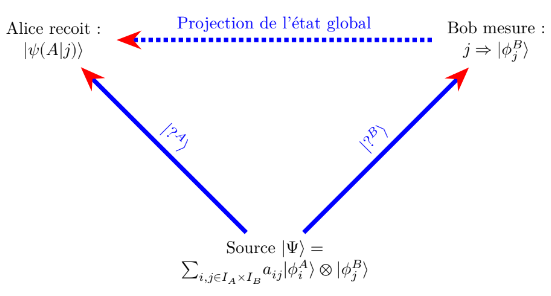
Source : Émet l’état intriqué |\Psi\rangle à Alice et Bob.
Bob mesure : Bob effectue une mesure et obtient le résultat j, l’état de Bob est projeté sur |\phi_{j}^{B}\rangle.
Alice reçoit : En conséquence, le système d’Alice est instantanément projeté dans l’état relatif |\psi(A|j)\rangle.
10.6 Le paradoxe Einstein-Podolsky-Rosen (EPR) :
Le paradoxe EPR, publié en 1935, est l’un des plus célèbres défis à l’interprétation de la mécanique quantique.
Il considère le cas d’une source créant deux particules de spin \frac{1}{2} intriquées, l’une envoyée à Alice et l’autre à Bob (Wiggins 2024, 153).
Conséquence du Postulat de Mesure : Le postulat de mesure en mécanique quantique stipule que si Alice mesure une quantité (par exemple, le spin suivant l’axe z), l’état quantique global “s’effondre” dans l’état propre correspondant au résultat de la mesure d’Alice. Par conséquent, si Bob mesure la même quantité, il obtiendra exactement la même valeur que Alice.
Le résultat de cette expérience semble contraire à l’expérience commune de deux manières (Wiggins 2024, 156) :
Non-localité : La corrélation semble se produire instantanément, indépendamment de la distance entre Alice et Bob.
Non-réalité : La mécanique quantique implique que les propriétés n’existent pas avant la mesure, défiant la notion de réalité locale.
11 Informatique et information quantique :
11.1 Introduction :
Entre les fondements théoriques datant des années 1920-1930 abondamment développés dans ce cours, et la période actuelle a on l’impression que les choses ont peu avancées. En réalité, il a fallu du temps pour réaliser les vérifications expérimentales des prédictions théoriques. Ainsi le mécanisme de l’intrication a été vérifié seulement avec la thèse d’Alain Aspect soutenue le 1er février 1983 au centre d’Orsay de l’université Paris-Sud. (Aspect 1983) C’est ce décalage entre les prédictions théoriques et les vérifications expérimentales qui expliquent que les investissements industriels mettent beaucoup de temps à se faire. On entend quelquefois le terme “d’hiver quantique” pour qualifier cette période qui est située entre les deux révolutions quantiques, la première étant celle qui a permis le développement de l’électronique, et la seconde celle qui concerne l’ordinateur quantique. En annonçant en 2019 avoir atteint la suprématie quantique, Google a attiré l’attention du grand public. Ce terme de suprématie signifie simplement que l’ordinateur quantique a dépassé l’ordinateur classique en termes de performances.
En informatique classique on a longtemps parié sur la loi de Moore pour prédire l’amélioration des capacités classiques des processeurs. Ce sont les limites atteintes aujourd’hui qui renforcent le besoin pour la quantique.
11.2 Qbit - porte logique :
Une autre approche qui ressemble à celle de l’électronique consiste à créer des portes logiques quantiques qui serviront de briques de base. Par exemple en électronique le transistor est un composant qui est un assemblage de portes logiques élémentaires. Une porte logique possède une fonction logique.
Un qbit est une unité d’information dont l’état peut être une superposition des états de base |0\rangle et |1\rangle, représentant simultanément 0 et 1, jusqu’à ce qu’une mesure l’effondre vers un de ces deux états.
Mathématiquement un qbit est représenté par un vecteur colonne de dimension 2, et une porte par une matrice 2 \times 2 (ou plus)
Du fait du principe de superposition, un qbit peut être dans une infinité d’états combinaison linéaire tels que \alpha |0\rangle +\beta |1\rangle avec \left|\alpha \right|^{2}+\left|\beta \right|^{2}=1
Un exemple courant de porte est la fonction NOT (inversion logique) représentable par la matrice :
\begin{pmatrix} 0 & 1 \\ 1 & 0 \end{pmatrix}
Veuillez noter que contrairement au bit, le qubit n’a pas de valeur mais un état. (Cluzel, Mazel, and Hill 2020). De même on pouvait voir une porte logique comme une fonction qui calcule et retourne un résultat et on peut voir une porte quantique comme une procédure qui effectue un traitement et modifie ses entrées.
12 Quantique et reseaux :
12.1 Le réseau pour la quantique :
La question du consensus est un angle de vue spécifique pour aborder la question.
A l’horizon 5 ans il faudra adapter les infrastructures actuelles pour permettre l’émergence de l’internet quantique : à quoi ressemblera le réseau d’interconnexion des QPUs (distributed quantum computing)?
Dans ce cas, le domaine des réseaux informatiques n’est pas une application de la quantique mais une infrastructure réseau adaptée aux ordinateurs quantiques constitue un besoin.
Voici un tableau de synthèse :
|
Réseaux Classiques (IP) | |
| Vecteur d’info | Flux de photons/électrons (Massif) | Particule unique ou intrication |
| Nature du “paquet” | Signal déterministe (0 ou 1) | Paquet d’ondes (Potentialités) |
| Effet du temps | Atténuation / Bruit | Étalement / Décohérence | |
| Observation | Copie possible (Monitoring) | Mesure = Altération irréversible | |
| Objectif ingénieur | Intégrité des données | Maintien de la cohérence | |
Prenons la question en sens inverse dans le paragraphe suivant.
12.2 La quantique pour la securité réseau : le consensus quantique ? :
Avertissement : la convergence entre les lois de la physique quantique (intrication, superposition) et les problèmes des systèmes distribués (consensus) est un sujet de recherche avancé. Sa pertinence technique s’évalue sur deux horizons temporels distincts :
Immédiate (court terme) : pour la sécurité des échanges cryptographiques (QKD).
Théorique (long terme) : pour le remplacement ou l’amélioration des algorithmes de consensus classiques.
Comme le souligne Stéphane Bortzmeyer (Bortzmeyer) dans son article de blog le protocole TCP est la pierre angulaire du réseau internet depuis 30 ans. Le couple TCP/IP est toutefois sensible de base au man-in-the-middle : il est possible par exemple avec une sonde réseau d’interférer avec une trame de donnée, que ce soit dans le sens IP ou bien TCP.
Il est tentant de remplacer la validation par TCP par une validation décentralisée : dans le cas ou l’un des validateurs est corrompu cela est composé par l’honnêteté des autres. Il faut toutefois avoir confiance dans le consensus obtenu par les validateurs. Le problème du consensus est né.
La notion d’algorithme de consensus quantique existe. Il s’agit toutefois d’un thème de recherche à l’intersection de la blockchain (et plus largement des systèmes distribués) et de la quantique. En quantique il s’agit d’une autre façon de désigner le mécanisme de l’intrication. Toutefois la finalité est celle d’obtenir un consensus.
Citons comme techniques d’intrication :
- Intrication spatiale
- Intrication temporelle
Toutefois en matière de blockchain il existe deux grandes tendances de gouvernance :
- On-chain
- Off-chain
Par on-chain je veux dire : qui est situé dans le code informatique.
Dans le second cas (off-chain) les parties prenantes vont se mettre d’accord sur quelque chose qui sera dans un second temps intégré dans le code par exemple sous forme d’une règle dans un smart contract.
Dans le premier cas (on-chain) un consensus peut se faire sans intervention humaine. Toutefois on peut imaginer qu’ensuite des méchanismes de contrôle off-chain interviendront. L’algorithme de consensus quantique etant base sur les lois de la physique (puis traduit sous forme de code informatique) est on-chain.
La dynamique on-chain / off-chain est avant tout celle d’une interaction entre ces deux facettes de la gouvernance.
[ GOUVERNANCE OFF-CHAIN ] <-- Humains / Stratégie
|
==========================================================
[ GOUVERNANCE ON-CHAIN ]
|
+-----+-------+
| SMART | <-- Logique métier automatisée
| CONTRACTS | (Ex: "Si condition X alors action Y")
+-----+-------+
|
+-----+-------+
| ALGORITHME | <-- Validation de la vérité
| DE CONSENSUS| (Exemple:PoW,PoS)
+-----+-------+
|
==========================================================
[ COUCHE PHYSIQUE ] On peut classifier les algorithmes de consensus de la façon suivante :
+-----------------------------------+-----------------+
| TYPE DE CONSENSUS | CARACTÉRISTIQUE |
+-----------------------------------+-----------------+
| Agrément Byzantin (BFT) | Déterministe |
| | |
| Consensus Nakamoto (PoW/PoS) | Probabiliste |
| | |
| Algorithme de Consensus Quantique | Probabiliste |
+-----------------------------------+-----------------+Ce tableau de synthèse est une esquisse. Par exemple en quantique la mesure est probabiliste, par contre l’équation de Schrödinger est déterministe.
La problématique du consensus est fondamentale en matière de réseau car elle rejoint celle de la validation en environnement décentralisé : comment mettre d’accord des entités indépendantes.
Lorsque deux particules sont intriquées, l’information va pouvoir être communiquée de façon instantanée entre les deux. Les deux particules sont donc d’accord. Quelle est l’utilité de ce consensus en matière de réseau ? Où se trouve l’intervention humaine dans ce cas ? Ce ne sont que quelques pistes.
Le seminaire poincare (Seminar et al. 2021) met en valeur (Gheorghiu, Kapourniotis, and Kashefi 2019) pour qui la question est :
if a quatum experiment solves a problem which is proven to be intractable for classical computers, how caon one verify the outcome of the experiment ?
il y a plusieurs pistes possibles et les protocoles bases sur l’intrication en est une. a ce sujet l’experience du consensus pour la blockchain peut servir d’inspiration.
13 L’écosystème de la quantique :
13.1 Les acteurs en présence :
Le 10 juin 2025, Station F a accueilli la 4ᵉ édition de la conférence France Quantum (FranceQuantum2025?) Voici les priorités technologiques presentee lors du salon :
Intégration des processeurs quantiques dans les super ordinateurs exemple : Pasqal a délivré un processeur de 100 qbits au CEA.
Développer des ordinateurs quantiques tolérants aux fautes :
Leadé par le CEA et l’Inria à Grenoble.
Engagement sur 15 ans du ministère de la défense avec 5 starts up : Alice & Bob, C12, Pasqal, Quandela, et Quobly
Quantum sensor
Post quantum cryptographie
Quantum communication (secure quantum communication networks)
Il n’y a pas véritablement un géant europeen de la quantique, toutefois il y a pas mal de start up engagées ainsi qu’un fort soutien de la commission européenne.
En France on compte Atos, Thales et EDF et des starts up.
Au niveau universitaire en Ile-de-France on peut citer entre autres Sorbonne Université, Paris Saclay, Telecom Paris notamment qui font de la recherche mais aussi des enseignements de longue date.
La Commission européenne a officialisé, le 2 juillet 2025, sa Stratégie Quantique Européenne. Cette initiative vise à positionner l’Europe comme un leader mondial des technologies quantiques d’ici 2030. Un « Quantum Act » est également en préparation, avec une proposition législative attendue pour 2026.
Au niveau américain Google, IBM et Microsoft sont très engagés sur le quantique.
Les chinois sont également très en pointe.
14 Annexe mathématique
14.1 Opérations sur les vecteurs
14.1.1 Définition : vecteur
Comme indiqué par Laurent Pluchart dans son préambule (Pluchart 2014), un vecteur est défini par l’algèbre linéaire comme un élément qui appartient à un espace vectoriel.
14.1.2 Définition : espace vectoriel
Voici les définitions fondamentales adaptées de Wiggins (2024).
Un espace vectoriel, noté \mathcal{V} sur un corps \mathcal{F} (ici, l’ensemble des nombres complexes \mathbb{C}), est un ensemble d’éléments (appelés vecteurs) sur lequel deux opérations sont définies :
- Addition vectorielle : \forall |\psi \rangle, |\phi\rangle \in \mathcal{V} \implies |\psi\rangle + |\phi\rangle \in \mathcal{V}
- Multiplication par un scalaire : \forall \alpha \in \mathbb{C}, |\psi \rangle \in \mathcal{V} \implies \alpha |\psi\rangle \in \mathcal{V}
Lorsque j’étais étudiant, j’avais été invité à une soirée où un élève en mathématiques affirmait fièrement que les mathématiciens étaient des gens formidables. Il racontait que la veille, il s’était « amusé » avec des camarades à travailler sur un espace à une trentaine de dimensions. J’étais alors surpris et plutôt sceptique quant à l’utilité d’une telle démarche.
Pourtant, en physique quantique, on travaille bel et bien sur des espaces abstraits de dimension infinie (comme les espaces de Hilbert pour les fonctions d’onde). C’est précisément cette abstraction qui rend ce formalisme si puissant, mais aussi réputé difficile.
14.1.3 Produit scalaire de deux vecteurs
En géométrie classique (dans \mathbb{R}^3), le produit scalaire de deux vecteurs réels correspond au produit de leurs longueurs par le cosinus de l’angle qu’ils forment :
\boxed{\vec{V_1} \cdot \vec{V_2} = V_1 \cdot V_2 \cdot \cos \theta}
\theta étant l’angle formé par les deux vecteurs \vec{V_1} et \vec{V_2}.
Si (X_1, Y_1) et (X_2, Y_2) sont les composantes respectives de \vec{V_1} et \vec{V_2}, l’expression analytique de leur produit scalaire s’écrit :
\vec{V_1} \cdot \vec{V_2} = X_1 X_2 + Y_1 Y_2
Ce résultat peut être représenté sous forme matricielle :
\begin{pmatrix} X_2 & Y_2 \end{pmatrix} \begin{pmatrix} X_1 \\ Y_1 \end{pmatrix} \quad \text{ou} \quad \begin{pmatrix} X_1 & Y_1 \end{pmatrix} \begin{pmatrix} X_2 \\ Y_2 \end{pmatrix}
Deux vecteurs sont dits orthogonaux lorsque leur produit scalaire est nul.
Le produit scalaire est une opération qui prend deux vecteurs et résume leur relation spatiale sous la forme d’un seul nombre (un scalaire). C’est tout son intérêt : synthétiser l’information vectorielle sous une forme réduite.
14.1.4 Norme d’un vecteur
Selon Laurent Pluchart (Pluchart 2014), en géométrie euclidienne classique, la norme d’un vecteur représente la longueur du segment qui porte ce vecteur.
Mathématiquement, pour un vecteur \vec{v} = (v_1, v_2, \dots, v_n) dans un espace réel de dimension n, la norme est donnée par la formule :
\boxed{\|\vec{v}\| = \sqrt{v_1^2 + v_2^2 + \dots + v_n^2}}
Voici une définition plus générale issue de l’algèbre linéaire :
For any vector \Phi \in V, we define the norm of \Phi, denoted \|\Phi\|, as follows: \|\Phi\| = \sqrt{(\Phi,\Phi)} (Wiggins 2024)
14.1.5 Le produit hermitien (extension aux nombres complexes)
En anglais : complex inner product.
Le produit hermitien est la généralisation du produit scalaire aux espaces vectoriels complexes (\mathbb{C}^n).
Prenons l’exemple d’un vecteur d’état complexe |V_1\rangle :
|V_1\rangle = \begin{pmatrix} x \\ -ix \end{pmatrix}
Le vecteur dual correspondant (le bra \langle V_1|), obtenu par transproposition et conjugaison complexe, s’écrit :
\langle V_1| = \begin{pmatrix} x & ix \end{pmatrix}
Le produit hermitien de |V_1\rangle avec lui-même nous donne la norme au carré \|V_1\|^2 :
\|V_1\|^2 = \langle V_1 | V_1 \rangle = \begin{pmatrix} x & ix \end{pmatrix} \begin{pmatrix} x \\ -ix \end{pmatrix} = x^2 + (ix)(-ix) = x^2 + x^2 = 2x^2
La norme est donc \|V_1\| = \sqrt{2x^2} = \sqrt{2}x.
Pour normaliser le vecteur |V_1\rangle à l’unité (\|V_1\| = 1), il faut fixer la valeur x = \frac{1}{\sqrt{2}}. Le vecteur d’état normé s’écrit alors :
|V_1\rangle = \frac{1}{\sqrt{2}} \begin{pmatrix} 1 \\ -i \end{pmatrix}
14.1.5.1 Orthogonalité et propriété de symétrie hermitienne
Deux vecteurs complexes |V_1\rangle et |V_2\rangle sont dits orthogonaux si leur produit hermitien est nul :
\langle V_1 | V_2 \rangle = 0
Contrairement au produit scalaire réel, le produit hermitien n’est pas commutatif. Il possède la propriété de symétrie hermitienne (la permutation des kets entraîne la conjugaison complexe) :
\langle V_1 | V_2 \rangle = \overline{\langle V_2 | V_1 \rangle} \implies \langle V_1 | V_2 \rangle \neq \langle V_2 | V_1 \rangle
Lorsque les vecteurs n’ont que des composantes réelles, le produit hermitien se confond parfaitement avec le produit scalaire classique.
14.1.5.2 Généralisation continue et définition rigoureuse
Lorsque l’on passe de la dimension finie (matrices) à la dimension infinie (fonctions d’onde dans un domaine D \subset \mathbb{R}), la somme discrète devient une intégrale (Wiggins 2024) :
(\Psi, \phi) = \int_D \overline{\Psi(x)} \, \phi(x) \, dx
L’ensemble des fonctions vérifiant cette propriété forme l’espace de Hilbert L^2(D).
Voici la définition mathématique générale d’un produit interne complexe :
An inner product on a vector space V is a map of an ordered pair of vectors (\Psi, \phi) to the complex numbers that satisfies the following properties:
- (\Psi, \alpha \phi + \beta \chi) = \alpha (\Psi, \phi) + \beta (\Psi, \chi)
- (\Psi, \phi) = \overline{(\phi, \Psi)}
- (\phi, \phi) \ge 0, and equality holds if and only if \phi = 0,
for any \alpha, \beta \in \mathbb{C} and \Psi, \phi, \chi \in V. (Wiggins 2024)
14.1.6 Produit vectoriel et produit mixte
14.1.6.1 Produit vectoriel
Contrairement au produit scalaire ou hermitien qui renvoie un nombre, le produit vectoriel de deux vecteurs de \mathbb{R}^3 (noté \vec{U} \times \vec{V} ou \vec{U} \wedge \vec{V}) produit un troisième vecteur orthogonal au plan formé par les deux premiers.
Très utilisé en mécanique classique et en électromagnétisme (pour calculer un moment ou la force de Lorentz), il n’est pas utilisé dans la formulation standard des espaces d’états en mécanique quantique.
14.1.6.2 Produit mixte
Le produit mixte de trois vecteurs (\vec{U}, \vec{V}, \vec{W}) combine produit scalaire et produit vectoriel : \vec{U} \cdot (\vec{V} \times \vec{W}). Il correspond au volume orienté du parallélépipède formé par ces trois vecteurs.
Comme le produit vectoriel, cette notion ne s’applique qu’en géométrie tridimensionnelle réelle et reste hors du cadre de notre étude des espaces d’états complexes.
14.1.7 Notation Bra-Ket
Introduite par Paul Dirac (du mot anglais bracket, qui signifie crochet), cette notation est simplement un jeu d’écriture pratique :
- Le Ket |\psi\rangle : C’est le vecteur colonne (l’état quantique).
- Le Bra \langle\phi| : C’est le vecteur ligne (le vecteur conjugué).
- Le Bra-Ket \langle\phi|\psi\rangle : C’est le produit scalaire entre le vecteur ligne et le vecteur colonne.
Le résultat d’un Bra-Ket est toujours un simple nombre complexe. Si le vecteur est normé à 1, le produit \langle\psi|\psi\rangle = 1 signifie que la probabilité totale de trouver le système dans un état quelconque est de 100 %.
14.1.8 Espace de Hilbert
Nous allons utiliser la définition donnée par Dotsenko et al. (Dotsenko, Courtat, and Gauthier 2025) : l’espace des fonctions L^2 muni du produit scalaire (f|g) et de la norme \|f\|_2 est un espace de Hilbert.
Comme le précisent les auteurs, il s’agit d’une définition restreinte à l’espace fonctionnel. Plus généralement, on considère un espace de Hilbert dans un sens plus large comme tout espace vectoriel équipé d’un produit scalaire pour ses éléments, y compris l’espace des vecteurs ordinaires en dimension finie.
Une grande partie de la difficulté d’abstraction de la physique quantique vient du fait que l’on travaille dans un espace de Hilbert, c’est-à-dire un espace abstrait.
On entend parfois des affirmations fausses par simplification : * « L’espace de Hilbert est notre espace spatio-temporel avec un nombre infini de dimensions » : FAUX. * « L’espace de Hilbert est un simple espace informationnel » : FAUX AUSSI, car le principe d’incertitude donne les incertitudes sur la mesure à partir d’opérateurs qui sont des bases dans l’espace de Hilbert. L’espace de Hilbert est plutôt l’espace qui décrit les phénomènes avant la mesure (voir le paragraphe sur la mesure quantique).
14.2 Les opérateurs quantiques
Un opérateur est une application linéaire qui transforme un vecteur d’état (un Ket) en un autre vecteur d’état dans l’espace de Hilbert. Dans une base donnée, un opérateur se représente sous la forme d’une matrice.
On distingue deux grands types d’opérateurs :
Les observables (ex. Position \hat{X}, Impulsion \hat{P}, Hamiltonien \hat{H}) : Ce sont des opérateurs hermitiens associés à des grandeurs physiques mesurables.
L’opérateur densité (ou matrice densité \hat{\rho}) : Contrairement aux observables, cet opérateur ne mesure pas une grandeur physique mais décrit l’état du système lui-même (notamment pour les états mixtes ou les systèmes ouverts). Pour un état pur |\psi\rangle, il s’écrit sous forme de projeteur :
\hat{\rho} = |\psi\rangle\langle\psi|
14.2.1 Comparaison des formalismes : Opérateurs matriciels et fonctionnels
Dans son ouvrage de 1960, Austin Blaquière opère une comparaison entre le formalisme matriciel (issu de la mécanique matricielle d’Heisenberg) et le formalisme fonctionnel (la mécanique ondulatoire de Schrödinger).
Précision sur le terme « d’opérateur » chez Blaquière À l’époque de Blaquière, la notion d’opérateur s’appliquait essentiellement aux observables (les grandeurs physiques mesurables comme la position \hat{X} ou l’impulsion \hat{P}) :
- Dans le formalisme fonctionnel (Schrödinger) : L’observable est un opérateur différentiel agissant sur des fonctions d’onde \psi(x) (ex. \hat{P} = -i\hbar\frac{\partial}{\partial x}).
- Dans le formalisme matriciel (Heisenberg) : L’observable est une matrice (un opérateur matriciel) agissant sur des vecteurs d’état.
Il ne faut pas confondre ces opérateurs d’observables (qui agissent sur les états) avec la matrice densité introduite plus tardivement dans les cours d’introduction, qui est un opérateur d’état servant à décrire les mélanges statistiques.
14.3 Représentation matricielle d’une observable
Généralisons les résultats vus précédemment.
Un vecteur est maintenant représenté dans une base à n dimensions par une matrice unicolonne (un ket) :
|V\rangle = \begin{pmatrix} x_1 \\ x_2 \\ \vdots \\ x_n \end{pmatrix}
ou par sa matrice uniligne associée (le bra) :
\langle V| = \begin{pmatrix} x_1 & x_2 & \dots & x_n \end{pmatrix}
Une matrice carrée A de dimension n peut être considérée comme un opérateur linéaire agissant dans cet espace.
La loi de transformation s’exprime par l’égalité matricielle qui transforme un vecteur |V\rangle en un vecteur |V'\rangle :
\begin{pmatrix} x_1' \\ x_2' \\ \vdots \\ x_n' \end{pmatrix} = \begin{pmatrix} a_{11} & a_{12} & \dots & a_{1n} \\ a_{21} & a_{22} & \dots & a_{2n} \\ \vdots & \vdots & \ddots & \vdots \\ a_{n1} & a_{n2} & \dots & a_{nn} \end{pmatrix} \begin{pmatrix} x_1 \\ x_2 \\ \vdots \\ x_n \end{pmatrix}
Ce produit matriciel est équivalent au système d’équations linéaires suivant :
\begin{cases} x_1' = a_{11}x_1 + a_{12}x_2 + \dots + a_{1n}x_n \\ x_2' = a_{21}x_1 + a_{22}x_2 + \dots + a_{2n}x_n \\ \quad \vdots \\ x_n' = a_{n1}x_1 + a_{n2}x_2 + \dots + a_{nn}x_n \end{cases}
Dans son premier tome, Austin Blaquière pose le système d’équations algébriques linéaires comme fondement mathématique (Blaquiere1960?).
Lorsque l’on passe d’une représentation matricielle à une représentation fonctionnelle, l’équation aux valeurs propres prend la forme d’une équation différentielle. L’opérateur peut alors comporter des dérivées premières ou secondes (\frac{d}{dx}, \frac{d^2}{dx^2}), mais la fonction f y apparaît toujours de façon linéaire (sans terme en f^2).
En réalité, le qualificatif linéaire ne dépend pas de l’ordre de dérivation, mais du fait que le système respecte le principe de superposition : si deux fonctions f_1 et f_2 sont solutions de l’équation, alors leur somme f_1 + f_2 (ou toute combinaison linéaire) est aussi solution.
Géométriquement, cela signifie que l’ensemble des solutions forme un sous-espace vectoriel : si l’on associe un vecteur à une fonction solution, toute combinaison linéaire de ces vecteurs reste dans le même espace. C’est cette propriété fondamentale que l’on nomme linéarité.
14.3.1 Équation aux valeurs propres
Un vecteur |V\rangle non nul est dit vecteur propre de la matrice A si l’opération se réduit à une simple multiplication de ce vecteur par un scalaire \lambda (réel ou complexe).
Le vecteur transformé |V'\rangle est alors simplement colinéaire à |V\rangle :
|V'\rangle = \lambda |V\rangle
La relation fondamentale définissant un vecteur propre de la matrice A s’écrit donc :
\boxed{A |V\rangle = \lambda |V\rangle}
Le nombre \lambda est appelé la valeur propre associée au vecteur propre |V\rangle.
C’est cette équation aux valeurs propres qui va nous guider dans la recherche des grandeurs physiques mesurables.
Plus loin, nous utiliserons la fonction d’onde \Psi pour décrire l’état d’une particule. Nous poserons que si |\Psi_n\rangle est un vecteur propre d’un opérateur d’observable A associé à la valeur propre a_n, alors :
\boxed{A |\Psi_n\rangle = a_n |\Psi_n\rangle}
Dans une expérience, la quantité a_n représente l’une des valeurs numériques que l’on peut effectivement obtenir lors d’une mesure de l’observable A.
14.4 Représentation fonctionnelle d’une observable
14.4.1 Définition fonctionnelle de l’équation aux valeurs propres
On dit qu’une fonction f est fonction propre de l’opérateur \hat{A} avec la valeur propre a (nombre indépendant des variables) si l’on a :
\hat{A}f = af
L’opération se réduit dans ce cas à une simple multiplication de la fonction f par le nombre a.
14.4.2 Exemple 1 : Opérateur de dérivation du premier ordre
Cherchons les fonctions propres de l’opérateur :
\hat{A} = \frac{d}{dx}
Si la fonction f(x) est fonction propre de \hat{A}, elle doit vérifier l’équation aux valeurs propres :
\frac{d}{dx}f(x) = a f(x)
où a est la valeur propre associée.
Cette équation différentielle du premier ordre à variables séparables s’intègre comme suit :
\frac{1}{f}\frac{df}{dx} = a \quad \implies \quad \ln|f| = ax + C \quad \implies \quad f(x) = k e^{ax} \quad (k \in \mathbb{C})
Les fonctions propres de \hat{A} = \frac{d}{dx} sont donc de la forme f(x) = k e^{ax}, associée à la valeur propre a.
Intuitivement, la fonction exponentielle est la seule fonction dont la dérivée est proportionnelle à elle-même (à une constante près). Il est donc tout à fait naturel d’obtenir une exponentielle comme solution de cette équation aux valeurs propres.
14.4.3 Exemple 2 : Opérateur de dérivation du second ordre
Rappel : méthode générale de résolution d’une équation différentielle du second ordre à coefficients constants : (Delbarre and Warembourg 2022)
ay''+ by' + cy = 0 On considère l’équation caractéristique : ar² + br + c = 0 Soit \Delta le discriminant de cette équation.
Si \Delta > 0 on note r1 et r2 les deux solutions. Les solutions sont des fonctions du type y=A_1e^{r_1x} + A_2e^{r_2x} avec A_1 et A_2 appartenant à \mathbb{R}
Si \Delta = 0 on note r la solution. Les solutions sont des fonctions du type y=A_1e^{rx} + A_2e^{rx} avec A_1 et A_2 appartenant à \mathbb{R}
Si \Delta < 0 on note r_1 et r_2 les deux solutions complexes conjuguées de R avec r_1=\Re{r_1} + i\Im{r_1} et r_2=\Re{r_2} + i\Im{r_2}
Considérons maintenant l’opérateur du second ordre :
\hat{B} = \frac{d^2}{dx^2}
Cherchons ses fonctions propres f(x) associées à la valeur propre b :
\frac{d^2 f(x)}{dx^2} = b f(x)
Il s’agit d’une équation différentielle linéaire du second ordre à coefficients constants. La nature des solutions dépend du signe de la valeur propre b :
Si b > 0 (valeur propre positive) : Les solutions sont des exponentielles réelles : f(x) = C_1 e^{\sqrt{b}x} + C_2 e^{-\sqrt{b}x}
Si b < 0 (valeur propre négative) : En posant b = -k^2 (avec k \in \mathbb{R}), l’équation devient \frac{d^2 f}{dx^2} + k^2 f = 0. Les solutions sont des fonctions oscillantes (sinus, cosinus ou exponentielles complexes) : f(x) = A e^{i k x} + B e^{-i k x} \quad \text{ou} \quad f(x) = C_1 \cos(kx) + C_2 \sin(kx)
En physique quantique, l’opérateur d’énergie cinétique s’écrit \hat{T} = -\frac{\hbar^2}{2m}\frac{d^2}{dx^2}.
Pourquoi la physique quantique impose \Delta < 0 ?
Une fonction d’onde \psi(x) doit obligatoirement pouvoir être normalisée : la somme de ses probabilités sur tout l’espace doit être égale à 1 (espace L^2).
Si \Delta > 0 (b > 0) : la solution f(x) \propto e^{\sqrt{b}x} s’envole vers +\infty. Une telle particule aurait une probabilité infinie d’être à l’infini, ce qui n’a aucun sens physique (sauf dans des cas très particuliers comme l’effet tunnel à l’intérieur d’une barrière de potentiel).
Si \Delta < 0 (b < 0) : la solution oscille (e^{i k x}), son module \vert{}f(x)\vert{}^2 reste borné et constant. C’est la signature d’une onde plane quantique associée à une particule libre de quantité de mouvement p = \hbar k.
Le discriminant \Delta est donc naturellement négatif, ce qui fait émerger les nombres complexes et les ondes directement de la structure mathématique de l’équation aux valeurs propres !
14.4.4 Produit scalaire hermitien de deux vecteurs fonctionnels complexes
Nous pouvons considérer ces fonctions propres complexes comme des vecteurs généralisés complexes, c’est-à-dire des vecteurs d’un espace de Hilbert (ou vecteurs d’état).
Il convient d’étendre à ces vecteurs fonctionnels complexes la définition du produit scalaire rencontrée dans le cas des vecteurs réels : il s’agit du produit hermitien.
Soient f(x) et g(x) deux fonctions complexes d’une variable réelle x, définies sur l’intervalle [0, T], et f^*(x) (ou \overline{f(x)} dans la notation de Blaquière) la fonction conjuguée complexe de f(x).
Le produit hermitien (ou produit scalaire dans cet espace fonctionnel) est défini par :
\boxed{\langle f | g \rangle = \frac{1}{T} \int_{0}^{T} f^*(x) g(x) \, dx}
Le facteur \frac{1}{T} agit comme une moyenne spatiale ou temporelle sur l’intervalle d’intégration.
14.4.5 Pourquoi le produit doit-il être hermitien ?
Si l’on utilisait un produit scalaire classique sans la conjugaison complexe, la « norme au carré » d’une fonction complexe f(x) = e^{i k x} serait :
\int_{0}^{T} f(x) f(x) \, dx = \int_{0}^{T} e^{2i k x} \, dx \quad \implies \text{qui est un nombre complexe !}
Or, en physique quantique, la norme d’un vecteur d’état doit être un nombre réel positif pour représenter une probabilité. Grâce à la conjugaison de la première fonction, le produit d’une fonction par elle-même donne :
\langle f | f \rangle = \frac{1}{T} \int_{0}^{T} f^*(x) f(x) \, dx = \frac{1}{T} \int_{0}^{T} |f(x)|^2 \, dx \ge 0
Ce produit hermitien est donc indispensable pour définir la norme et l’orthogonalité des fonctions d’onde dans la base.
14.4.6 Propriété d’orthogonalité
Deux vecteurs fonctionnels complexes |f\rangle et |g\rangle sont dits orthogonaux si leur produit hermitien est nul :
\boxed{\langle f | g \rangle = 0}
Du fait de la définition du produit hermitien, nous avons la propriété de symétrie complexe :
\langle g | f \rangle = \langle f | g \rangle^*
Ainsi, si \langle f | g \rangle = 0, alors son conjugué complexe \langle g | f \rangle = 0^* = 0. L’orthogonalité est donc une propriété mutuelle et symétrique.
Dans le formalisme fonctionnel, les fonctions propres d’un opérateur hermitien (comme l’opérateur \frac{d^2}{dx^2} sous des conditions aux limites appropriées) associées à des valeurs propres distinctes sont automatiquement orthogonales entre elles.
Par conséquent, parler de « fonctions orthogonales » ou de « vecteurs d’état orthogonaux » est strictement équivalent, puisque l’ensemble de ces fonctions forme la base d’un espace de Hilbert.
14.4.7 Norme d’un vecteur fonctionnel
On appelle norme au carré du vecteur fonctionnel complexe |f\rangle le produit hermitien de ce vecteur par lui-même :
\|f\|^2 = \langle f | f \rangle = \frac{1}{T} \int_{0}^{T} f^*(x) f(x) \, dx = \frac{1}{T} \int_{0}^{T} |f(x)|^2 \, dx
Lorsque nous décomposerons la fonction d’onde |\Psi\rangle sur une base de vecteurs propres (|\Psi\rangle = \sum_i c_i |f_i\rangle), la norme au carré s’exprimera très simplement par la somme des modules au carré des coefficients :
\langle \Psi | \Psi \rangle = \|\Psi\|^2 = \sum_{i} c_i^* c_i = \sum_{i} |c_i|^2 = 1
En physique quantique, cette égalité exprime le fait que la somme des probabilités de trouver le système dans un état donné est égale à 100% (conservation de la probabilité).
14.4.8 Norme des fonctions propres de l’opérateur \frac{d^2}{dx^2}
Calculons la norme des fonctions propres complexes associées à des conditions aux limites périodiques sur [0, T] :
f_k(x) = e^{i k \frac{2\pi}{T} x} \quad (k \in \mathbb{Z})
Le calcul du produit hermitien de f_k(x) par elle-même donne :
\begin{aligned} \|f_k\|^2 = \langle f_k | f_k \rangle &= \frac{1}{T} \int_{0}^{T} \left( e^{i k \frac{2\pi}{T} x} \right)^* e^{i k \frac{2\pi}{T} x} \, dx \\ &= \frac{1}{T} \int_{0}^{T} e^{-i k \frac{2\pi}{T} x} e^{i k \frac{2\pi}{T} x} \, dx \\ &= \frac{1}{T} \int_{0}^{T} 1 \, dx = \frac{1}{T} \cdot T = 1 \end{aligned}
Les vecteurs de la suite |f_k\rangle ont donc tous pour norme l’unité.
14.4.9 Système orthonormé et complétude de la base
L’ensemble des fonctions propres |f_k\rangle de l’opérateur \frac{d^2}{dx^2} est à la fois orthogonal et normé à l’unité. On résume ces deux propriétés grâce au symbole de Kronecker \delta_{jk} :
\boxed{\langle f_j | f_k \rangle = \delta_{jk} = \begin{cases} 1 & \text{si } j = k \\ 0 & \text{si } j \neq k \end{cases}}
Ces fonctions constituent un système orthonormé.
De plus, ces fonctions forment un ensemble complet : n’importe quelle fonction d’onde physique g(x) définie sur [0, T] peut être développée de façon unique sous la forme d’une série de Fourier (combinaison linéaire de la base) :
g(x) = \sum_{k=-\infty}^{+\infty} c_k f_k(x)
14.4.10 Développement en série complexe de Fourier
Note historique et mathématique : Les séries de Fourier
En 1807, Joseph Fourier présente ses travaux sur la propagation de la chaleur. Il y avance l’idée révolutionnaire que toute fonction périodique peut être reconstruite par une somme de fonctions sinus et cosinus.
Série de Fourier complexe : (Najib 2022)
f(x) = \sum_{n=-\infty}^{+\infty} C_n e^{i 2\pi \frac{n}{T} x}
Cette formule exprime la fonction f(x) comme une superposition d’ondes élémentaires.
Coefficients de Fourier :
C_n = \frac{1}{T} \int_{0}^{T} f(t) e^{-i 2\pi \frac{n}{T} t} \, dt
Chaque coefficient C_n agit comme un « poids » qui détermine l’amplitude de l’harmonique n dans le signal global.
14.4.11 L’analogie algébrique chez Blaquière
Sous forme algébrique, la décomposition d’un vecteur fonctionnel |f\rangle sur la base des vecteurs propres |f_n\rangle de l’opérateur \frac{d^2}{dx^2} se traduit par l’identité :
f(x) = \sum_{n=-\infty}^{+\infty} C_n e^{i 2\pi \frac{n}{T} x}
où l’on suppose que f(x) est une fonction définie sur l’intervalle [0, T]. On reconnaît sous cette forme exacte le développement de f(x) en série de Fourier complexe.
Les coefficients C_n (qui représentent les composantes du vecteur |f\rangle dans cette base) se calculent par le produit hermitien entre le vecteur de base |f_n\rangle et le vecteur d’état |f\rangle :
\boxed{C_n = \langle f_n | f \rangle = \frac{1}{T} \int_{0}^{T} \left( e^{i 2\pi \frac{n}{T} t} \right)^* f(t) \, dt = \frac{1}{T} \int_{0}^{T} e^{-i 2\pi \frac{n}{T} t} f(t) \, dt}
Chez Blaquière, les coefficients de Fourier C_n ne sont rien d’autre que les composantes du vecteur fonctionnel dans la base des fonctions propres.
En mécanique quantique, la projection \langle f_n | f \rangle donne l’amplitude de probabilité d’observer le système dans l’état propre |f_n\rangle.
L’apparition du terme i \frac{2\pi}{T} dans l’expression des fonctions propres f_k(x) = e^{i k \frac{2\pi}{T} x} résulte de deux contraintes physiques fondamentales :
- L’apparition du i (\Delta < 0) : Pour que la solution ne diverge pas à l’infini et reste physiquement bornée, la valeur propre de l’opérateur \frac{d^2}{dx^2} doit être négative. Le discriminant de l’équation caractéristique étant négatif, les solutions sont obligatoirement des exponentielles complexes oscillantes à base d’imaginaires purs (i).
- L’apparition du 2\pi / T (conditions aux limites) : L’exigence de continuité et de périodicité sur l’intervalle [0, T] impose f(0) = f(T), ce qui verrouille la constante de phase à des valeurs discrètes \lambda = k \frac{2\pi}{T} avec k \in \mathbb{Z}.
C’est la combinaison de la régularité physique (\Delta < 0) et du confinement spatial ([0, T]) qui fait émerger la quantification et le formalisme de Fourier.
L’équation différentielle (l’opérateur \hat{H} ou \frac{d^2}{dx^2}) fournit la structure mathématique globale, mais ce sont les conditions physiques et géométriques de l’expérience (le confinement et les parois) qui dictent la forme exacte des vecteurs de la base orthonormée.
Ce principe explique pourquoi un même opérateur différentiel génère des bases de fonctions complètement différentes selon le dispositif expérimental considéré :
| Dispositif expérimental | Conditions aux limites (Contraintes physiques) | Forme des vecteurs de la base | Nature du spectre |
|---|---|---|---|
| Puits infini / Boîte rigide | Parois impénétrables en x=0 et x=L : \psi(0) = \psi(L) = 0 |
Sinus réels : \psi_n(x) = \sqrt{\frac{2}{L}} \sin\left(\frac{n\pi}{L}x\right) |
Discret (n \in \mathbb{N}^*) |
| Anneau quantique | Conditions périodiques sur [0, T] : \psi(0) = \psi(T) |
Exponentielles complexes discrets : f_k(x) = e^{i k \frac{2\pi}{T} x} |
Discret (k \in \mathbb{Z}) |
| Particule totalement libre | Aucun confinement (x \in ]-\infty, +\infty[) : Pas de conditions aux bords |
Ondes planes continues : \psi_k(x) = e^{i k x} |
Continu (k \in \mathbb{R}) |
| Atome d’hydrogène | Potentiel central coulombien : \psi(r, \theta, \phi) \to 0 quand r \to \infty |
Harmoniques sphériques \times Polynômes de Laguerre | Discret (n, l, m) |
14.4.11.1 Ce qu’il faut en retenir
- Confinement spatial (boîte, anneau, atome) \implies Spectre discret : Les conditions aux limites imposent une quantification. L’onde quantique doit « rentrer » dans le domaine sans s’auto-détruire par interférence destructive.
- Espace infini (particule libre) \implies Spectre continu : Sans parois pour imposer une longueur d’onde fixe, toutes les valeurs d’énergie et d’impulsion sont permises.
À l’image d’une corde de guitare dont la longueur et les points d’attache fixent les fréquences harmoniques autorisées, le piège expérimental sculpte la base des états propres accessibles au système.
L’erreur courante est de croire que la base du puits est soit une base de position, soit une base d’impulsion. En réalité :
- Ce n’est pas une base de position |x\rangle (la particule est étalée dans tout le puits).
- Ce n’est pas une base d’impulsion |p\rangle (c’est une superposition de +p et -p formant une onde stationnaire).
- C’est la base des états propres de l’énergie (\hat{H}) : la géométrie du puits combine la contrainte spatiale (x) et le comportement ondulatoire (p) pour créer des modes de vibration stationnaires, exactement comme les notes d’une corde de guitare.
L’étude du puits de potentiel unidimensionnel n’est pas un simple exercice académique : c’est le prototype de l’atome.
Dans un atome, l’attraction coulombienne du noyau joue exactement le rôle du puits de potentiel. L’électron y forme une onde stationnaire 3D.
L’existence des niveaux d’énergie discrets (n = 1, 2, 3\dots) découle directement de la même contrainte mathématique développée par Blaquière : seules les fonctions propres vérifiant les conditions aux limites du puits sont physiquement stables, imposant la quantification de l’énergie et la structure en couches de la matière.
14.4.12 Calcul pratique des éléments de la matrice \mathbf{B}
Nous allons calculer les éléments de la matrice \mathbf{B} pour un opérateur spécifique \hat{B} dans la base des fonctions propres de \hat{A} = \frac{d^2}{dx^2}.
Rappelons deux théorèmes importants de l’algèbre linéaire (Wiggins 2024) :
- Opérateur de projection : Soit P : V \to V un opérateur linéaire sur un espace vectoriel V. P est appelé opérateur de projection si P^2=P.
- Théorème spectral (dimension finie) : Soit \mathbf{A} : V \to V un opérateur linéaire auto-adjoint sur un espace produit scalaire complexe. Alors \mathbf{A} possède des valeurs propres réelles, ses vecteurs propres associés à des valeurs propres distinctes sont orthogonaux, et l’ensemble de ses vecteurs propres engendre V.
14.4.12.1 Exemple 1 : Opérateur dérivée \hat{B} = \frac{d}{dx}
Si \hat{B} = \frac{d}{dx}, nous adoptons pour base orthonormée les fonctions propres de l’opérateur \hat{A} = \frac{d^2}{dx^2} déterminées précédemment :
f_n(x) = e^{in\omega x} \quad \text{avec } \omega = \frac{2\pi}{T}
L’élément générique de matrice \mathbf{B}_{kn} = \left\langle f_k \right| \hat{B} \left| f_n \right\rangle s’écrit :
\mathbf{B}_{kn} = \frac{1}{T}\int_{0}^{T} \overline{f_k(x)} \, \hat{B} f_n(x)\,dx = \frac{1}{T}\int_{0}^{T} e^{-ik\omega x} \frac{d}{dx} e^{in\omega x}\,dx
14.4.12.1.1 Calcul des éléments non diagonaux (\mathbf{B}_{kn} avec k \neq n)
Illustrons d’abord avec l’élément \mathbf{B}_{21} = \left\langle f_2 \right| \hat{B} \left| f_1 \right\rangle :
\mathbf{B}_{21} = \frac{1}{T}\int_{0}^{T}e^{-i2\omega x} \frac{d}{dx} e^{i\omega x}\,dx = \frac{1}{T}\int_{0}^{T}e^{-i2\omega x} (i\omega e^{i\omega x})\,dx = \frac{i\omega}{T}\int_{0}^{T}e^{-i\omega x}\,dx
\mathbf{B}_{21} = \frac{i\omega}{T}\left[ \frac{e^{-i\omega x}}{-i\omega} \right]_{0}^{T} = \frac{i\omega}{T} \left( \frac{e^{-i\omega T} - 1}{-i\omega} \right)
Puisque \omega T = 2\pi, on a e^{-i\omega T} = e^{-i2\pi} = 1. D’où \mathbf{B}_{21} = 0.
Plus généralement, pour tout k \neq n :
\mathbf{B}_{kn} = \frac{i n \omega}{T}\int_{0}^{T}e^{-i(k-n)\omega x}\,dx = \frac{i n \omega}{T} \left[ \frac{e^{-i(k-n)\omega x}}{-i(k-n)\omega} \right]_{0}^{T} = 0
Les éléments non diagonaux de la matrice représentative de \frac{d}{dx} sont donc tous nuls.
14.4.12.1.2 Calcul des éléments diagonaux (\mathbf{B}_{nn} avec k = n)
L’élément diagonal \mathbf{B}_{nn} s’obtient directement :
\mathbf{B}_{nn} = \frac{1}{T}\int_{0}^{T}e^{-in\omega x} \frac{d}{dx} e^{in\omega x}\,dx = \frac{in\omega}{T}\int_{0}^{T}dx = in\omega
La matrice représentative de \hat{B} = \frac{d}{dx} dans cette base est donc strictement diagonale :
\mathbf{B}=\begin{pmatrix} \ddots & & & & & & & \\ & -i3\omega & 0 & 0 & 0 & 0 & 0 & \\ & 0 & -i2\omega & 0 & 0 & 0 & 0 & \\ & 0 & 0 & -i\omega & 0 & 0 & 0 & \\ & 0 & 0 & 0 & 0 & 0 & 0 & \\ & 0 & 0 & 0 & 0 & i\omega & 0 & \\ & 0 & 0 & 0 & 0 & 0 & i2\omega & \\ & & & & & & & \ddots \end{pmatrix}
Les termes diagonaux étant imaginaires purs (in\omega), la matrice \mathbf{B} n’est pas hermitienne.
En revanche, l’opérateur \hat{P}_x = \frac{1}{i}\frac{d}{dx} (qui devient l’impulsion physique \hat{P}_x = \frac{\hbar}{i}\frac{d}{dx}) possède des éléments diagonaux réels \mathbf{P}_{nn} = n\omega, ce qui en fait un opérateur hermitien.
14.4.12.1.3 Généralisation aux dérivées successives
Ce résultat se généralise immédiatement aux dérivées d’ordre supérieur \frac{d^k}{dx^k}. Les matrices associées sont toutes diagonales dans cette base, avec pour éléments diagonaux :
- Pour \frac{d}{dx} : \quad \ldots, -i2\omega, -i\omega, 0, i\omega, i2\omega, \ldots
- Pour \frac{d^2}{dx^2} : \quad \ldots, -4\omega^2, -\omega^2, 0, -\omega^2, -4\omega^2, \ldots
Selon (Wiggins 2024), pour un espace vectoriel de fonctions dérivables complexes, l’opérateur linéaire défini par (\hat{A}\Phi)(x) = -i\frac{d\Phi}{dx}(x) est hermitien et possède des valeurs propres réelles.
Une matrice représente une opération, tandis que ses vecteurs propres constituent sa base privilégiée. Il est remarquable de constater qu’à partir de la série de Fourier, on construit une base dont chaque harmonique est un vecteur propre commun aux opérateurs de dérivation successifs (\frac{d}{dx}, \frac{d^2}{dx^2}, \dots). Pour cette raison, on l’appelle la représentation en vitesse/impulsion, par opposition à la représentation en position x.
Cette construction prépare directement le formalisme quantique de l’espace de Hilbert. En acoustique classique, Fourier associe un spectre à un signal sonore. Mais ici, le formalisme génère un espace vectoriel abstrait.
En 1925, quelques semaines après avoir posé les bases de la mécanique matricielle, Werner Heisenberg rencontre David Hilbert, qui travaillait depuis longtemps sur les espaces spectraux infinis. Heisenberg, très pragmatique et ancré dans les données observables, n’a pas saisi immédiatement l’intérêt du formalisme de Hilbert. Plusieurs historiens des sciences suggèrent que si la jonction entre Heisenberg et Hilbert s’était faite aussitôt, la formulation ondulatoire de Schrödinger en 1926 aurait paru moins révolutionnaire, car la théorie matricielle aurait déjà disposé de son cadre géométrique continu.
En mécanique quantique, si deux opérateurs commutent, ils sont représentés par des matrices diagonales dans leur base commune de fonctions propres.
Ici, comme [\frac{d}{dx}, \frac{d^2}{dx^2}] = 0 : * La base des fonctions propres de \frac{d^2}{dx^2} est aussi la base des fonctions propres de \frac{d}{dx}. * Le calcul B_{kn} = \langle f_k | \frac{d}{dx} | f_n \rangle donne une matrice strictement diagonale dont les termes sont les valeurs propres imaginaires i n \frac{2\pi}{T}. * En multipliant par -i\hbar, on retrouve la matrice de l’impulsion \mathbf{P}, elle aussi diagonale, associée aux valeurs propres réelles p_n = n \frac{2\pi\hbar}{T}.
La forme de la matrice traduit directement le degré d’isolement et la dynamique du système physique :
Matrice diagonale (B_{kn} = 0 pour k \neq n) — Le système isolé : Lorsque la matrice d’un opérateur est strictement diagonale dans la base de l’énergie, chaque état propre |f_n\rangle est un état stationnaire. En l’absence de perturbation extérieure ou de potentiel dépendant de la position, le système reste indéfiniment dans son état. Il n’existe aucun couplage entre les différents niveaux : la probabilité de passer de l’état n à l’état k est nulle.
Matrice non diagonale (B_{kn} \neq 0) — Le système perturbé ou couplé : Dès que l’on applique une interaction extérieure (un champ électromagnétique, une force dépendante de x, ou une mesure), l’opérateur associé présente des éléments hors diagonale. Ces termes B_{kn} mesurent l’amplitude de transition quantique : ils décrivent la capacité du système à « sauter » d’un niveau d’énergie n à un niveau k sous l’effet de cette perturbation.
Retrouver une matrice diagonale revient donc à identifier les « axes naturels » (les modes propres) d’un système fermé, où l’énergie se conserve sans fuite ni transfert vers d’autres états.
14.4.12.2 Exemple 2 : Matrice non diagonale — Opérateur Position \hat{X} = x \times
Pour calculer la matrice de l’opérateur position \hat{X} dans la base de l’énergie (les fonctions propres f_n(x) = e^{in\omega x} de \frac{d^2}{dx^2}), on évalue l’intégrale :
\mathbf{X}_{pq} = \langle f_p | \hat{X} | f_q \rangle = \frac{1}{T}\int_{0}^{T} e^{-ip\omega x} \cdot x \cdot e^{iq\omega x} \, dx = \frac{1}{T}\int_{0}^{T} x \, e^{i(q-p)\omega x} \, dx
Puisque [x, \frac{d^2}{dx^2}] \neq 0, la matrice obtenue n’est pas diagonale : l’opérateur position connecte les différents états d’énergie entre eux, illustrant les transitions quantiques.
Adoptons pour l’opérateur \hat{B} l’opérateur de multiplication par la position \hat{X} = x \times. Le terme général \mathbf{X}_{pq} = \left\langle f_p \right| \hat{X} \left| f_q \right\rangle s’écrit avec \omega = \frac{2\pi}{T} :
\mathbf{X}_{pq} = \frac{1}{T}\int_{0}^{T} x \, e^{i(q-p)\omega x}\,dx
14.4.12.2.1 Cas p = q (Éléments diagonaux)
Si p = q, l’exponentielle s’annule (e^0 = 1) et l’intégrale devient :
\mathbf{X}_{nn} = \frac{1}{T}\int_{0}^{T}x \,dx = \frac{1}{T} \left[ \frac{x^2}{2} \right]_{0}^{T} = \frac{T}{2}
Tous les éléments diagonaux sont réels et égaux à \frac{T}{2}. Physiquement, cela indique que dans n’importe quel état propre d’énergie |f_n\rangle, la position moyenne \langle x \rangle de la particule est située au milieu du domaine [0, T].
14.4.12.2.2 Cas p \neq q (Éléments non diagonaux)
Posons \alpha = (q-p)\omega = (q-p)\frac{2\pi}{T}. L’intégrale à évaluer est :
I_{pq} = \int_{0}^{T}x e^{i\alpha x}\,dx
Par intégration par parties (\int u\,dv = uv - \int v\,du) avec u = x et dv = e^{i\alpha x}dx :
I_{pq} = \left[ x \frac{e^{i\alpha x}}{i\alpha} \right]_{0}^{T} - \int_{0}^{T} \frac{e^{i\alpha x}}{i\alpha} \,dx
Terme non intégré : \left[ x \frac{e^{i\alpha x}}{i\alpha} \right]_{0}^{T} = T \frac{e^{i\alpha T}}{i\alpha} - 0 Comme \alpha T = (q-p)2\pi, e^{i\alpha T} = 1. Le terme vaut donc \frac{T}{i\alpha}.
Terme intégré : - \frac{1}{i\alpha} \left[ \frac{e^{i\alpha x}}{i\alpha} \right]_{0}^{T} = \frac{1}{\alpha^2} (e^{i\alpha T} - 1) = 0
On obtient donc I_{pq} = \frac{T}{i\alpha}, d’où l’élément de matrice :
\mathbf{X}_{pq} = \frac{1}{T} I_{pq} = \frac{1}{i\alpha} = \frac{1}{i(q-p)\frac{2\pi}{T}} = -i \frac{T}{2\pi (q-p)} = -i \frac{1}{\omega (q-p)}
14.4.12.2.3 Structure de la matrice de Position \mathbf{X}
La matrice représentative de la position \hat{X} dans la base de Fourier/Énergie est pleinement non diagonale :
\mathbf{X} = \begin{pmatrix} \ddots & & & \vdots & & & \\ & \frac{T}{2} & \frac{i}{\omega} & \frac{i}{2\omega} & \frac{i}{3\omega} & \\ & -\frac{i}{\omega} & \frac{T}{2} & \frac{i}{\omega} & \frac{i}{2\omega} & \\ \cdots & -\frac{i}{2\omega} & -\frac{i}{\omega} & \mathbf{\frac{T}{2}} & \frac{i}{\omega} & \frac{i}{2\omega} & \cdots \\ & -\frac{i}{3\omega} & -\frac{i}{2\omega} & -\frac{i}{\omega} & \frac{T}{2} & \\ & & & \vdots & & & \ddots \end{pmatrix}
- Non diagonale : L’opérateur x ne commute pas avec \frac{d^2}{dx^2}, la position n’est pas conservée dans la base des états d’énergie.
- Hermiticité : Bien que les termes hors diagonale soient imaginaires purs, la matrice vérifie \mathbf{X}_{pq} = \overline{\mathbf{X}_{qp}}. Elle est hermitienne (\mathbf{X}^\dagger = \mathbf{X}), garantissant que toute mesure physique de la position donnera une valeur propre réelle.